MyBox用户手册 - 数据工具 v6.6
MyBox：简易工具箱
用户手册 - 数据工具
作者：Mara
版本：6.6
日期：2022-9-28
内容目录
1 简介 6
1.1 主菜单 6
1.2 资源地址 7
1.3 文档 8
1.4 工具的菜单 8
2 二维存储结构的数据 9
2.1 数据对象 9
2.2 功能菜单 10
2.3 编辑数据 11
2.3.1 保存与恢复 11
2.3.2 定义数据列 12
2.3.3 定义数据属性 14
2.3.4 表格编辑模式 15
2.3.5 文本编辑模式 16
2.3.6 查看网页 17
2.3.7 查看文本 17
2.3.8 加载系统粘贴板的内容 18
2.3.9 导入示例 19
2.3.9.1 中国的统计数据 19
2.3.9.2 回归相关的数据 20
2.4 行表达式 21
2.5 行过滤 23
2.6 修改 24
2.6.1 赋值 25
2.6.2 删除 26
2.6.3 设置风格/标识异常值 27
2.6.3.1 管理风格 27
2.6.3.2 数据范围 28
2.6.3.3 定义风格 29
2.6.3.4 应用 29
2.6.4 粘贴系统粘贴板的内容 30
2.6.5 粘贴MyBox粘贴板的内容 30
2.7 整理 31
2.7.1 复制/过滤/查询 32
2.7.2 排序 33
2.7.3 转置 34
2.7.4 归一化 35
2.7.5 分割 36
2.8 计算 37
2.8.1 行表达式 38
2.8.2 描述性统计 39
2.8.3 等值分组 40
2.8.4 简单线性回归 43
2.8.4.1 回归 43
2.8.4.2 模型 44
2.8.4.3 拟合图 45
2.8.4.4 残差图 46
2.8.5 简单线性回归-组合 47
2.8.6 多重线性回归 48
2.8.6.1 回归 48
2.8.6.2 模型 49
2.8.7 多重线性回归-组合 50
2.8.8 频数分布 51
2.8.9 数值百分比 52
2.9 数据图 53
2.9.1 XY图 54
2.9.1.1 数据 54
2.9.1.2 条图 54
2.9.1.3 堆叠条图 55
2.9.1.4 线图 56
2.9.1.5 散点图 56
2.9.1.6 气泡图 57
2.9.1.7 面积图 58
2.9.1.8 堆叠面积图 58
2.9.1.9 图数据的参数 59
2.9.1.10 布局 60
2.9.1.11 类别轴 61
2.9.1.12 数值轴 62
2.9.2 饼图 63
2.9.3 箱线图 64
2.9.4 自比较条图 66
2.9.5 相比较条图 67
2.9.6 XYZ图 68
2.9.6.1 三维散点图 68
2.9.6.2 曲面图 70
2.10 输出 72
2.10.1 导出 73
2.10.2 转换为数据库表 74
2.11 管理数据 75
2.12 拼接数据 76
2.13 数据文件 77
2.13.1 CSV文件 77
2.13.2 文本文件 78
2.13.3 Excel文件 79
2.13.4 批量转换/分割数据文件 80
2.13.5 合并数据文件 81
2.14 系统粘贴板中数据 82
2.15 MyBox粘贴板中的数据 83
2.16 矩阵 84
2.16.1 管理和编辑矩阵 84
2.16.2 矩阵的一元计算 85
2.16.3 矩阵的二元计算 86
2.17 数据库表 87
2.17.1 管理数据库表 87
2.17.2 SQL标识符的限制 88
2.17.3 数据库SQL 89
2.17.4 SQL查询 90
3 脚本与表达式 91
3.1 JShell（Java交互编程工具） 91
3.2 JEXL（Java表达式语言） 93
3.3 Javascript 95
4 数学函数 96
4.1 定义函数： 96
4.2 计算函数 96
4.3 数据集 98
4.4 一元函数的XY图 99
4.5 二元函数的XYZ图 100
5 位置数据 101
5.1 数据约束 101
5.1.1 无效值 101
5.1.2 坐标系统 101
5.1.3 坐标值 101
5.1.4 时间 101
5.1.4.1 时间格式 101
5.1.4.2 纪元 101
5.1.4.3 有效的时间示例 102
5.2 数据操作 102
5.3 地图数据 103
5.4 地理编码 105
5.4.1 数据定义 105
5.4.2 数据约束 105
5.4.3 编辑数据 105
5.4.4 定义条件 105
5.4.5 导入数据 105
5.4.5.1 内置的预定义数据 105
5.4.5.2 CSV格式 105
5.4.5.3 来自geoname.org的位置数据: 106
5.4.6 设置 106
5.5 地图上的位置 107
5.6 位置数据 108
5.6.1 数据定义 108
5.6.2 数据集 108
5.6.3 定义条件 108
5.6.4 地图数据 108
5.6.5 截图 108
5.6.6 导入数据 109
5.6.6.1 CSV格式 109
5.6.6.2 来自movebank.org的位置数据。 109
5.6.6.3 示例 109
5.7 位置工具 111
5.8 疫情报告 112
5.8.1 数据定义 112
5.8.2 数据约束 112
5.8.3 编辑数据 112
5.8.4 导入数据 112
5.8.4.1 MyBox内置预定义数据 112
5.8.4.2 CSV格式 113
5.8.4.3 来自约翰霍普金斯大学的COVID-19历史数据（全球）： 113
5.8.4.4 来自约翰霍普金斯大学的COVID-19每日数据（全球）。 113
5.8.4.5 导入的数据处理 113
5.8.5 统计数据 113
5.8.6 定义条件 114
5.8.7 显示图 114
5.8.8 设置 114
6 其它 116
6.1 编码条码 116
6.2 解码条码 116
6.3 消息摘要 116
6.4 编码/解码Base64 116
6.5 从ttc文件中提取ttf文件 116
这是利用JavaFx开发的图形化桌面应用，目标是提供简单易用的功能。免费开源。
|
内容 |
链接 |
|---|---|
|
项目主页 |
|
|
源代码和编译好的包 |
|
|
提交软件需求和问题报告 |
|
|
数据 |
|
|
文档 |
|
|
镜像 |
|
|
云盘 |
https://pan.baidu.com/s/1fWMRzym_jh075OCX0D8y8A#list/path=%2F |

|
文档名 |
版本 |
修改时间 |
英文 |
中文 |
|---|---|---|---|---|
|
开发日志 |
6.6 |
2022-9-28 |
||
|
快捷键 |
6.5.6 |
2022-6-11 |
||
|
打包步骤 |
6.3.3 |
2020-9-27 |
||
|
开发指南 |
2.1 |
2020-8-27 |
||
|
用户手册-综述 |
6.6 |
2022-9-28 |
||
|
用户手册-文档工具 |
6.6 |
2022-9-28 |
||
|
用户手册-图像工具 |
6.6 |
2022-9-28 |
||
|
用户手册-文件工具 |
6.6 |
2022-9-28 |
||
|
用户手册-网络工具 |
6.6 |
2022-9-28 |
||
|
用户手册-数据工具 |
6.6 |
2022-9-28 |
||
|
用户手册-媒体工具 |
6.6 |
2022-9-28 |
||
|
用户手册-开发工具 |
6.6 |
2022-9-28 |
数据文件，包括CSV文件、Excel文件、文本文件
MyBox粘贴板的数据
矩阵
数据库表
数据被表示为二维存储结构：
“列”在横向定义数据的维度。
“行”在纵向保存数据的值。
数据应当等宽。即所有行的列数都相同。
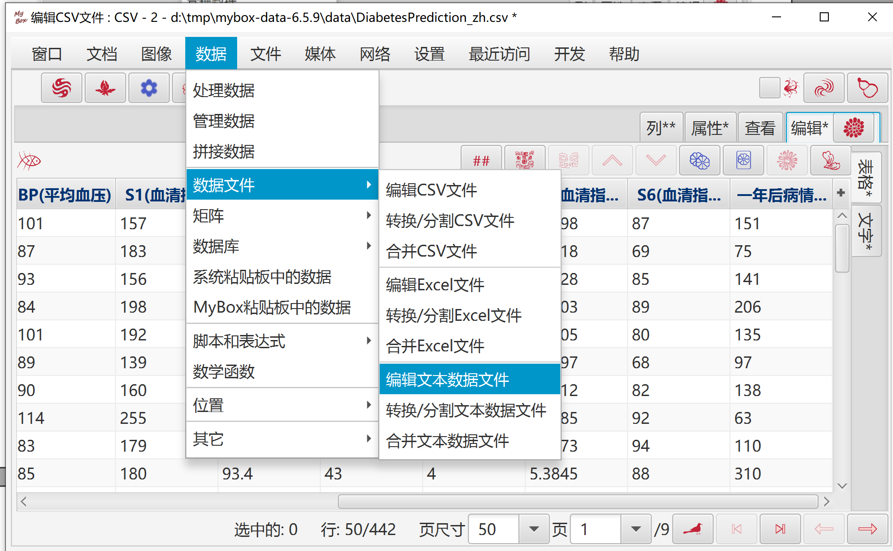
悬停或点击“功能”按钮以弹出功能菜单。
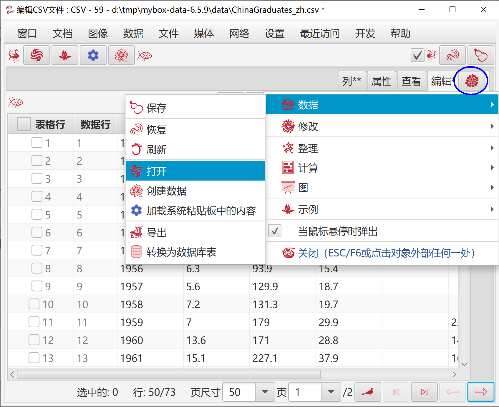
有修改时，页签头显示* 。若修改未应用，则显示 **。
点击按钮“保存”以把修改写入文件和数据库：
“表格”中行的变化，包括修改/添加/删除/排序，影响文件中当前页的行。
“列”页签中的变化，包括修改/添加/删除/排序，影响文件中所有行。
“属性/列的修改被保存到数据库中。
点击按钮“恢复”以丢弃所有修改并从文件和数据库中加载数据。
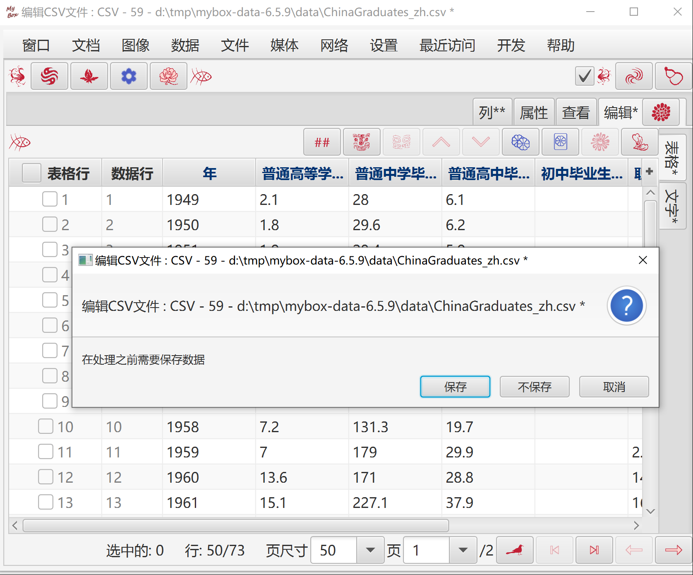
列名不能为空也不能重复。
列类型用来检验数据值:
在编辑数据时，非法值将被拒绝。
在读取和计算数据时，类型被忽略。
数据类型影响排序的结果。
点击按钮“确定”以把修改应用于“表格”。
点击按钮“取消”以丢弃修改并从“表格”读取数据。
可以重命名所有字段为序列号。
可以随机设置颜色。
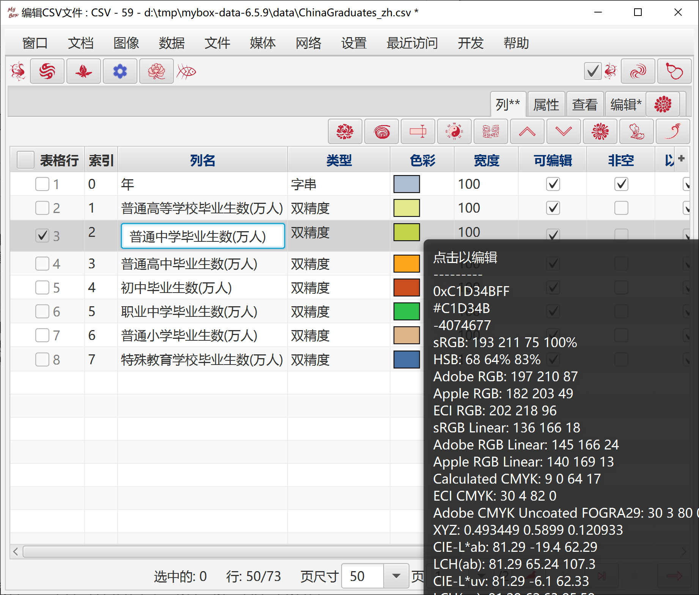
可以直接点击单元以编辑，也可以选择列并点击“编辑”按钮以弹出列的编辑窗口。
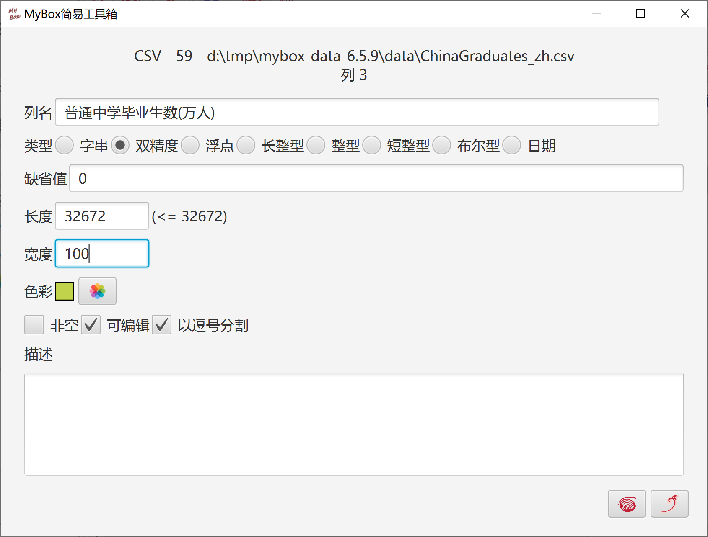
包括：数据名、小数位数、随机数的最大值。
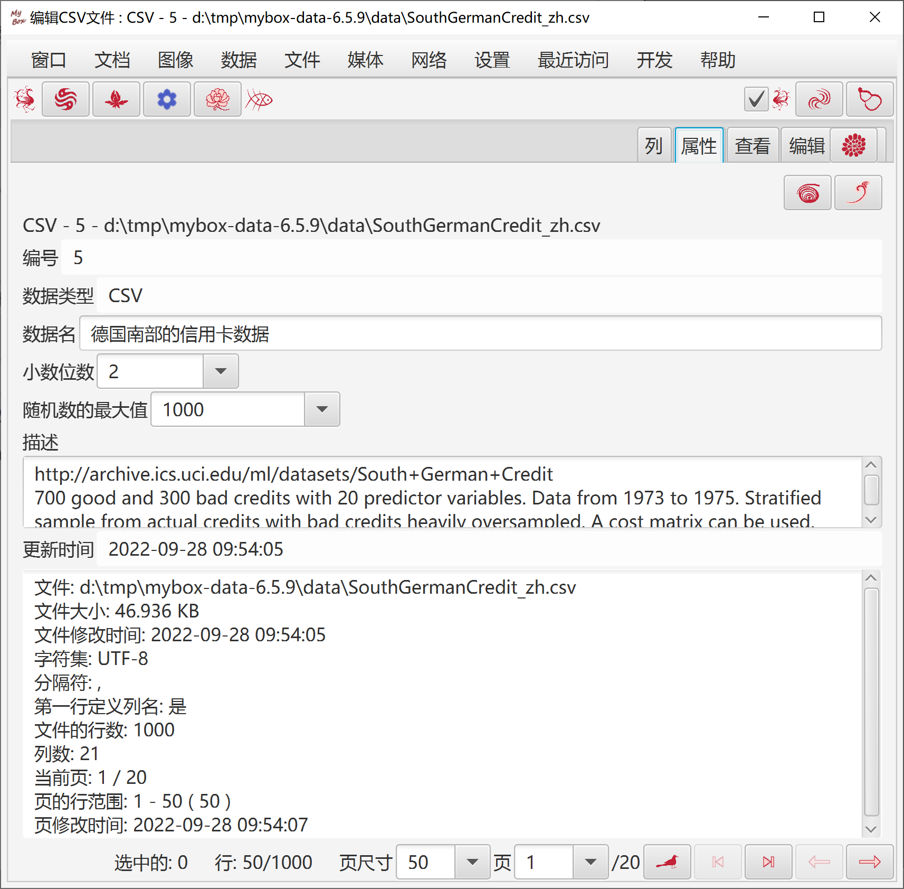
表格是主编辑模式：
它的修改被自动应用其它面板。
它是用于保存的最终数据。
对于字符串类型的数据，除了文本文件，支持编辑和保存多行：
若值是单行的（不包含换行符）：
点击数据单元时显示单行输入框。
在值中写入"\n" 作为换行符、然后提交修改（回车或点击其它地方）。
若值中包含换行符：
点击数据单元时显示多行输入框。
- 直接编辑多行文本。
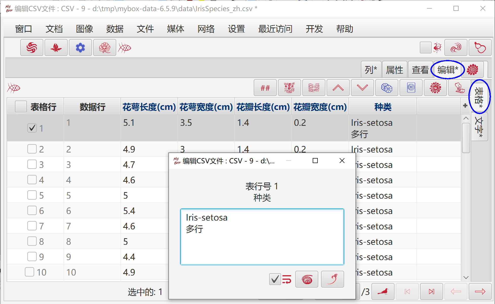
文本是辅编辑模式：
点击按钮“确定”以把它的修改应用于“表格”。
点击按钮“取消”以丢弃它的修改并从“表格”读取数据。
点击按钮“分隔符”以从“表格”读取数据并应用新的分隔符，它的修改被丢弃。
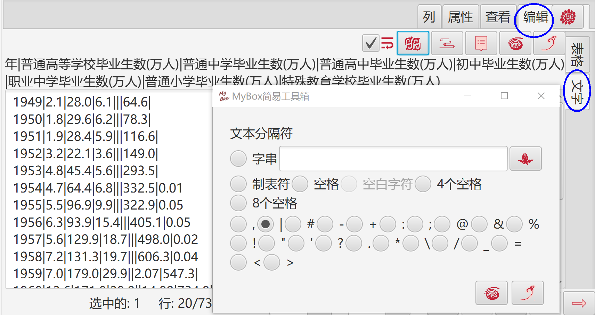
显示当前页的数据。
可选显示：表窗、标题、列名、行号。
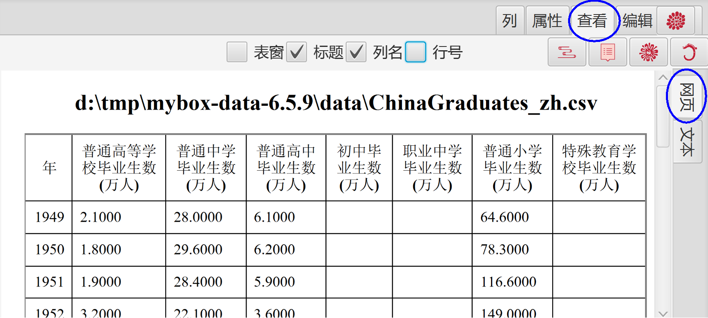
显示当前页的数据。
可选显示：表窗、标题、列名、行号。
可设置分隔符。
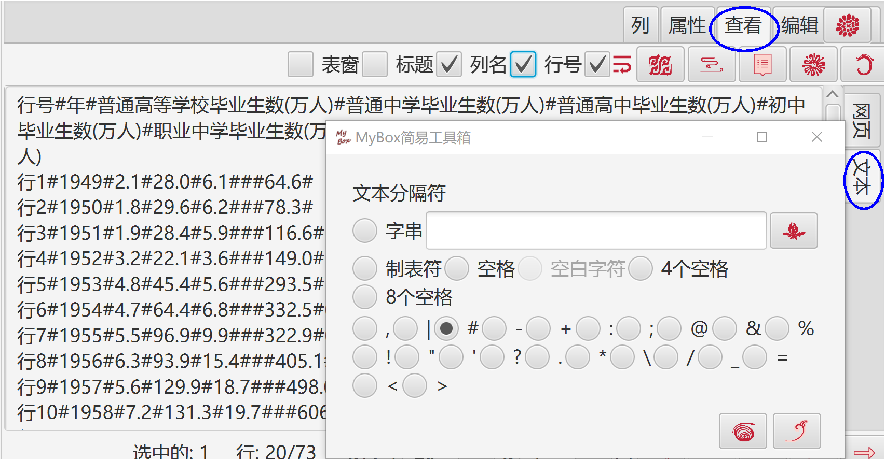
读取并解析系统粘贴板的内容。
自动猜测分隔符。
可选数据分隔符：特殊字符、或输入的规则表达式。
可选把第一行定义为列名。
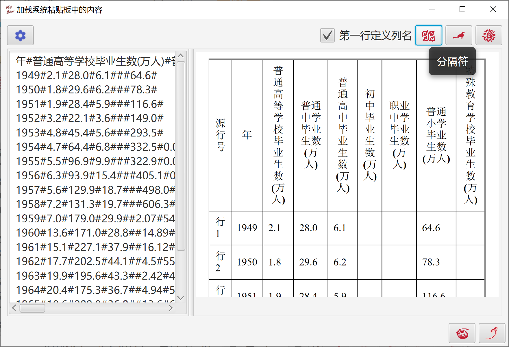
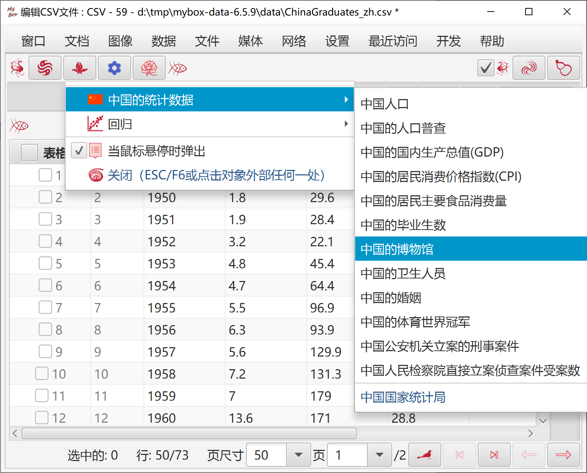

在加工/整理/计算数据、生成数据图时，可以输入JavaScript表达式作为数据值：
若脚本为空，则返回空字符串。
编辑脚本：
脚本可以包含Nashorn可以解析的任何合法元素(ECMAScript 5.1)。
脚本应当最终是一个数值。
脚本可以包含以下占位符：
#{表行号}
#{数据行号}
#{<列名>}
#{<列名>-<统计名>}
左边显示所有合法的占位符。
点击"编辑"按钮以保存脚本。
在MyBox计算表达式时:
占位符被数据行的实际值替换。
统计值是用所有数据来计算的。
'#{xxx}'被处理为字符串而#{xxx}被处理为数字。
处理所有页时，脚本若包含"#{表行号}"则会失败。
悬停或点击按钮“示例”，可以粘贴示例代码。
悬停或点击按钮“历史”，可以粘贴历史代码。

示例:
|
表达式 |
含义 |
|---|---|
|
#{数据行号} % 2 == 0 |
数据行号为偶数 |
|
#{表行号} % 2 == 1 |
当前页的奇数行 |
|
Math.abs(#{字段1}) + Math.PI * Math.sqrt(#{字段2}) |
数学计算 |
|
'#{字段1}'replace(/hello/ig, ‘Hello’) |
把列"字段1"的值中所有"hello"(忽略大小写)替换"Hello" |
|
'#{字段1}'.toLowerCase() |
列"字段1"的值的小写 |
|
'#{字段1}'.split(‘,’) |
把列"字段1"的值按逗号分隔 |
|
#{字段1} - #{字段1-均值} |
列"字段1"的值与列"字段1"的平均值之间的差值 |
脚本应当最终返回布尔值(“true"或"false”)。
可以设置取用数据的最多行数。
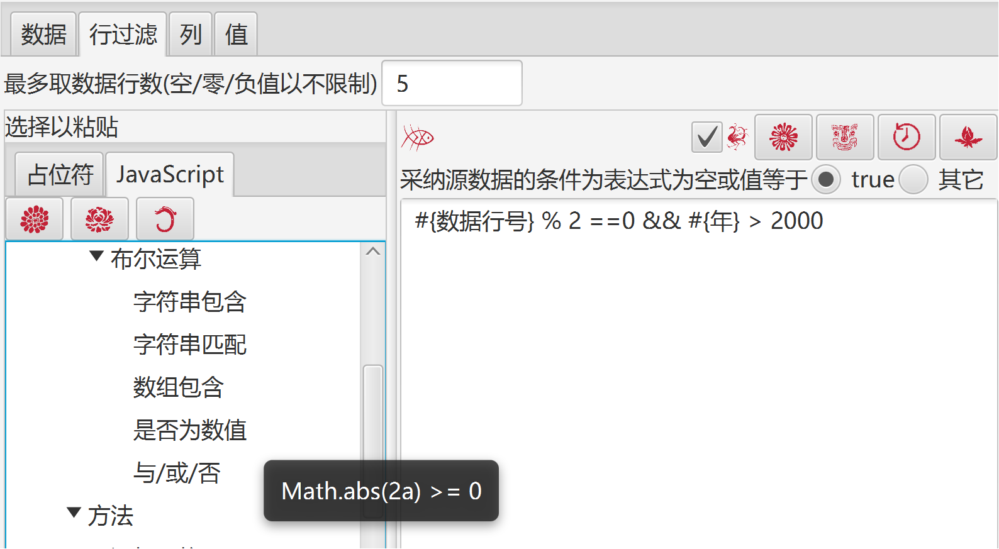
示例:
|
表达式 |
含义 |
|---|---|
|
#{数据行号} % 2 == 0 |
数据行号为偶数 |
|
#{表行号} % 2 == 1 |
当前页的奇数行 |
|
Math.abs(#{字段1}) >= 0 |
列"字段1"的值是数值 |
|
#{字段1}) > 0 |
列"字段1"的值大于零 |
|
#{字段1} - #{字段2} < 100 |
列"字段1"与"字段2"的值差小于100 |
|
'#{字段1}’.length > 0 |
列"字段1"的值不为空值 |
|
'#{字段1}’.search(/Hello/ig) >= 0 |
列"字段1"的值包含字符串"Hello"（忽略大小写） |
|
'#{字段1}’.startsWith(‘Hello’) |
列"字段1"的值以"Hello"开头 |
|
var array = [ ‘A’, ‘B’, ‘C’]; array.includes(‘#{字段1}’) |
列"字段1"的值为'A’或'B’或'C’ |
|
#{字段1} < #{字段1-均值} |
列"字段1"的值小于列"字段1"的平均值 |
悬停或点击功能按钮，选择“修改”下的功能。
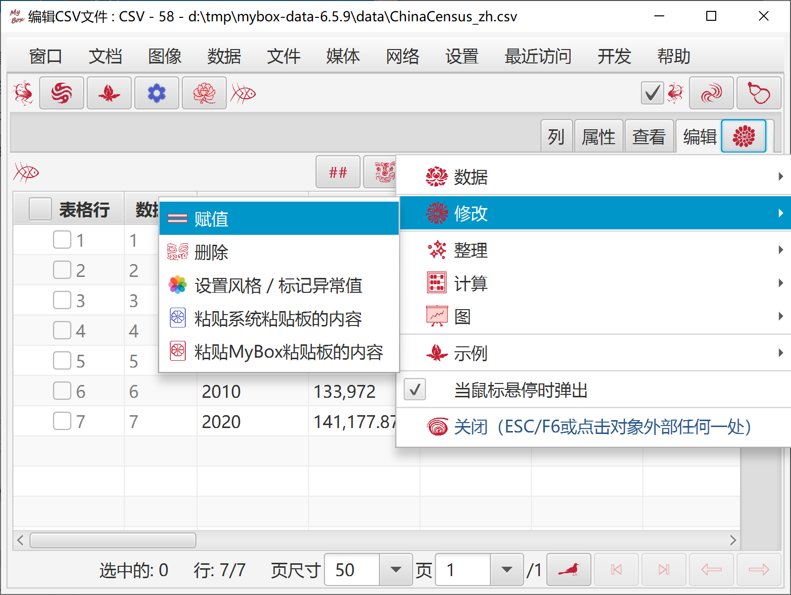
选择数据：
行可以是：当前页、选中的行、或所有页。
选择列，若不选则取所有列。
设置行过滤条件。
对所选数据赋值为：
常数：0、1、空格、或输入的值
随机数、随机数（非负）
添加前缀、附加后缀、设置小数位数、添加序列号
当所选数据为方阵（行列数相同），可赋值为：高斯分布、单位矩阵、上三角矩阵、下三角矩阵
行表达式
若处理数据文件的所有页，则在赋值之前对数据文件自动备份。

选择数据：
行可以是：当前页、选中的行、或所有页。
设置行过滤条件。
选项：是否在错误时继续处理。
若处理数据文件的所有页，则在删除之前对数据文件自动备份。
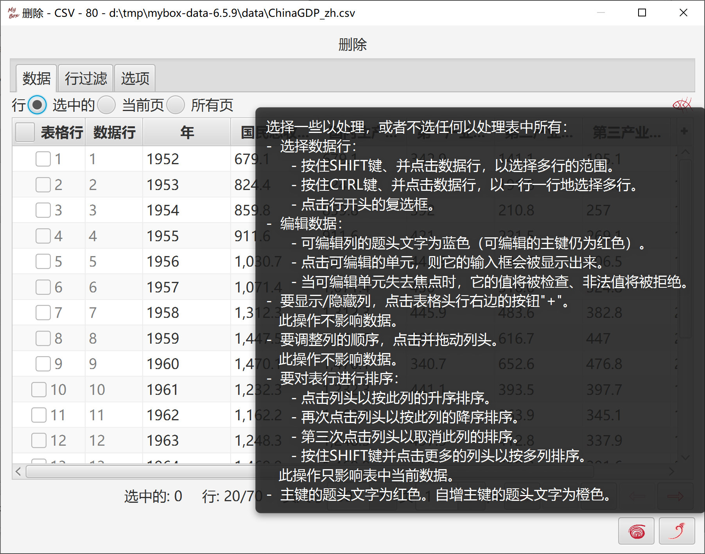
添加、编辑、删除、复制风格。
定义风格的标题和序号。
选择风格是否标识异常值。

定义条件以约束风格应用于哪些数据单元：
数据行的范围
列名
行过滤。
注意：在添加或删除一些数据行以后，数据的行号可能会改变。例如，在第6行之前插入两行，则原来的第12行变成了第14行，而现在的第12行是原来的第10行。
所以“行号”不是定位特定数据行的正确方式。引用特定的行的一个方法是列值构成的表达式。
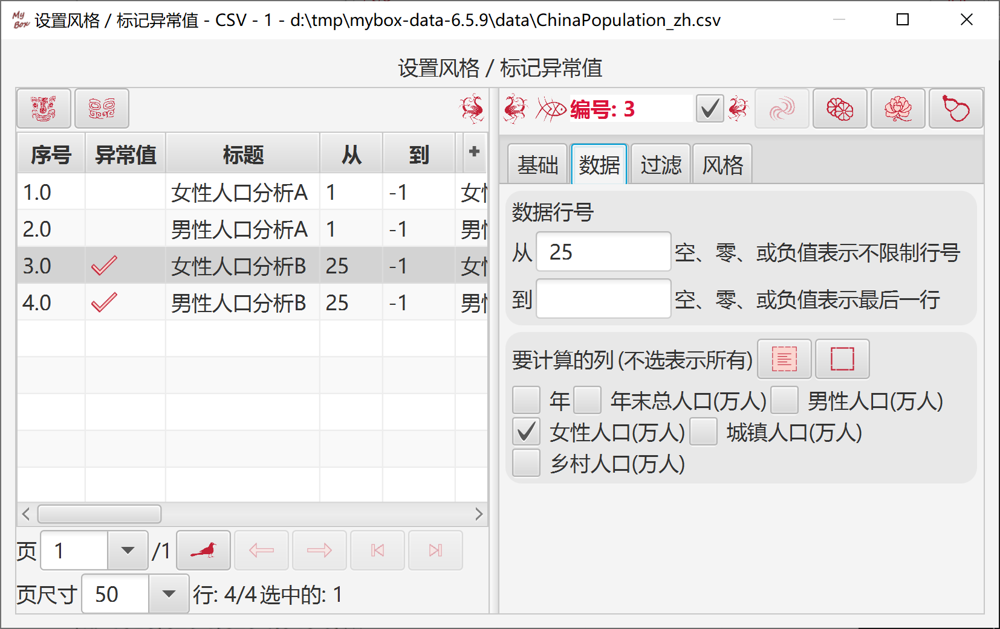
字体颜色、字体大小、背景颜色、是否粗体
可以输入JavaFx CSS格式的更多值。
在显示数据页面时，数据的所有风格按序号被逐条应用于数据行。
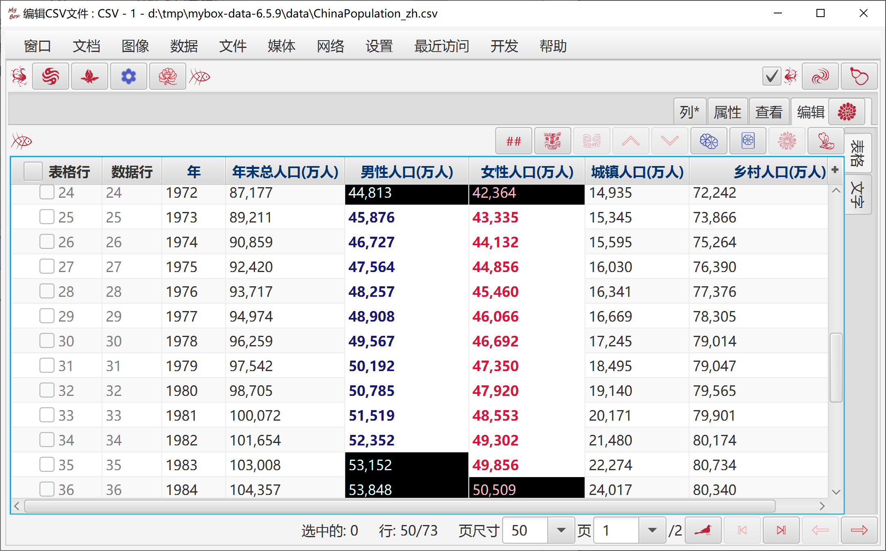
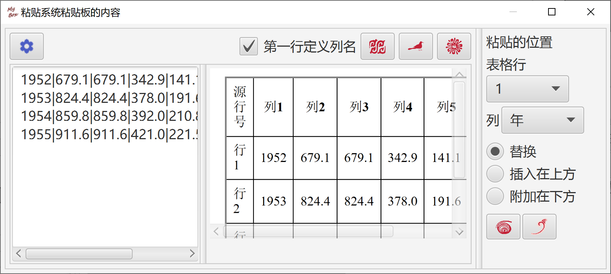
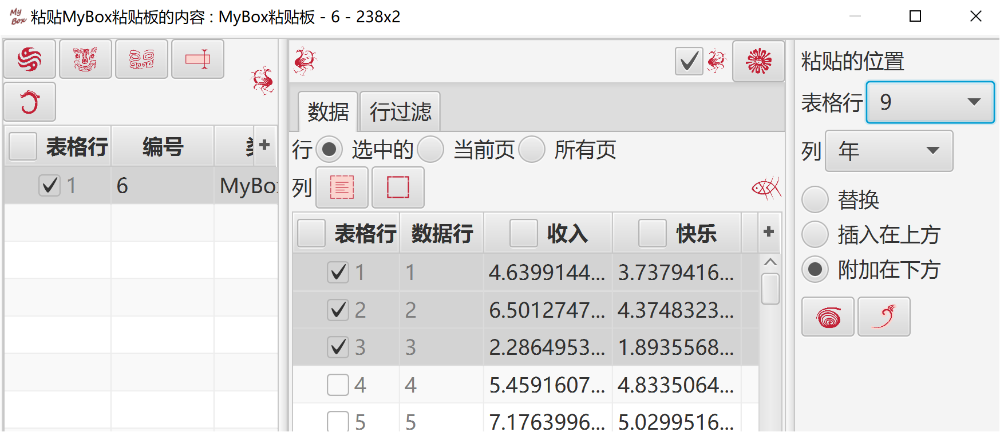
悬停或点击功能按钮，选择“整理”下的功能。
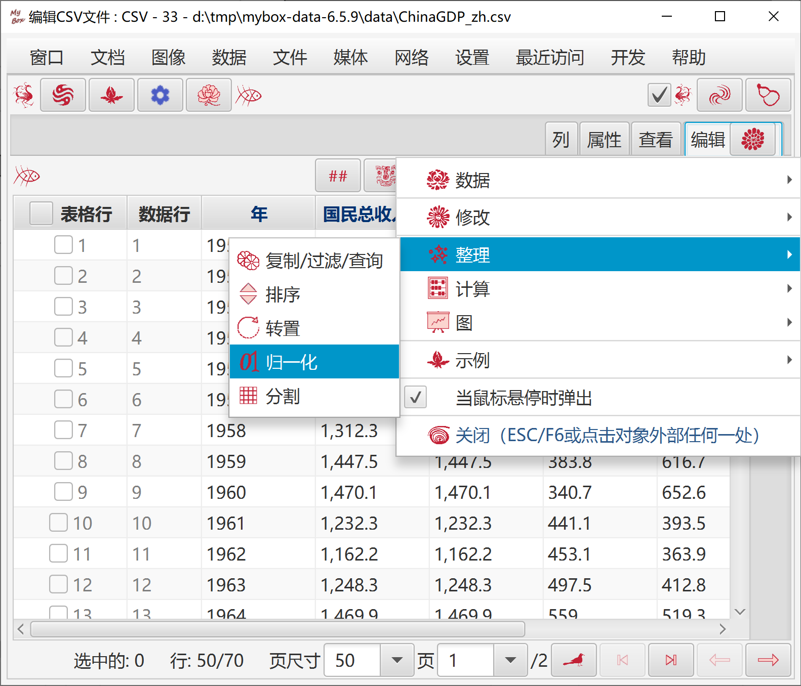
选择数据：
行可以是：当前页、选中的行、或所有页。
选择列，若不选则取所有列。
设置行过滤条件。
目标可为：新的csv/excel/文本文件、矩阵、系统粘贴板、MyBox粘贴板、数据库表。
当选择当前页或选中行时，目标还可以为：在表内指定位置插入、附加、或替换。
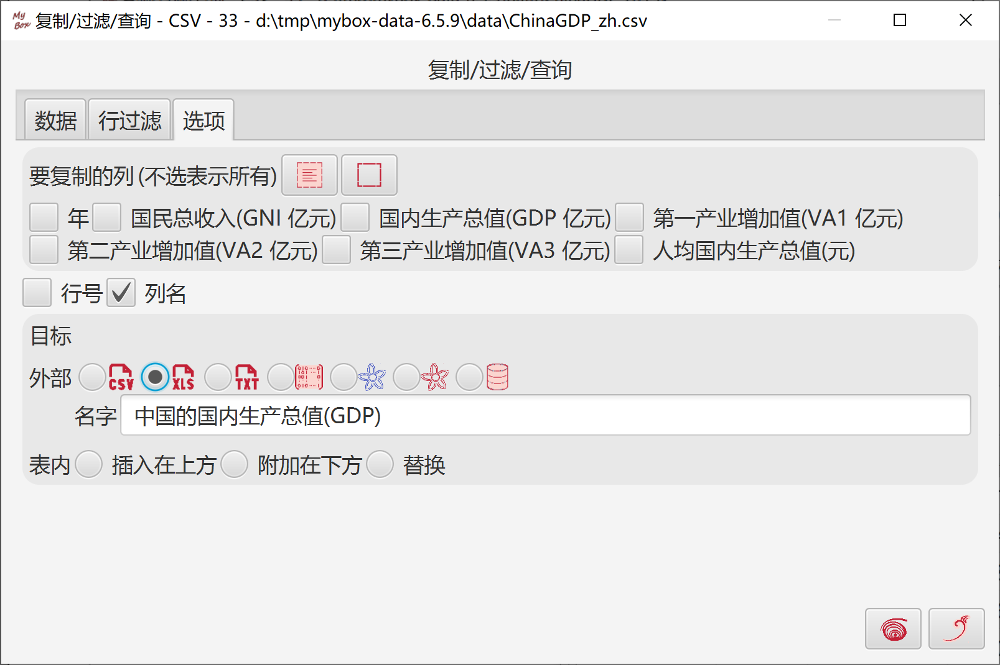
选择数据：
行可以是：当前页、选中的行、或所有页。
设置行过滤条件。
计算：
选择要排序的列、是否降序，可以多选。
列的数据类型影响排序的结果。
可设置最多取结果的行数。
选择要复制的列。
目标可为：新的csv/excel/文本文件、矩阵、系统粘贴板、MyBox粘贴板、数据库表。
当选择当前页或选中行时，目标还可以为：在表内指定位置插入、附加、或替换。
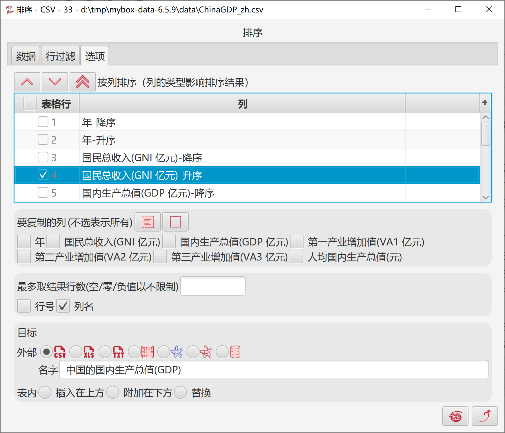
选择数据：
行可以是：当前页、选中的行、或所有页。
选择列，若不选则取所有列。
设置行过滤条件。
计算：可选“把第一列当作列名”。
目标可为：新的csv/excel/文本文件、矩阵、系统粘贴板、MyBox粘贴板、数据库表。
当选择当前页或选中行时，目标还可以为：在表内指定位置插入、附加、或替换。
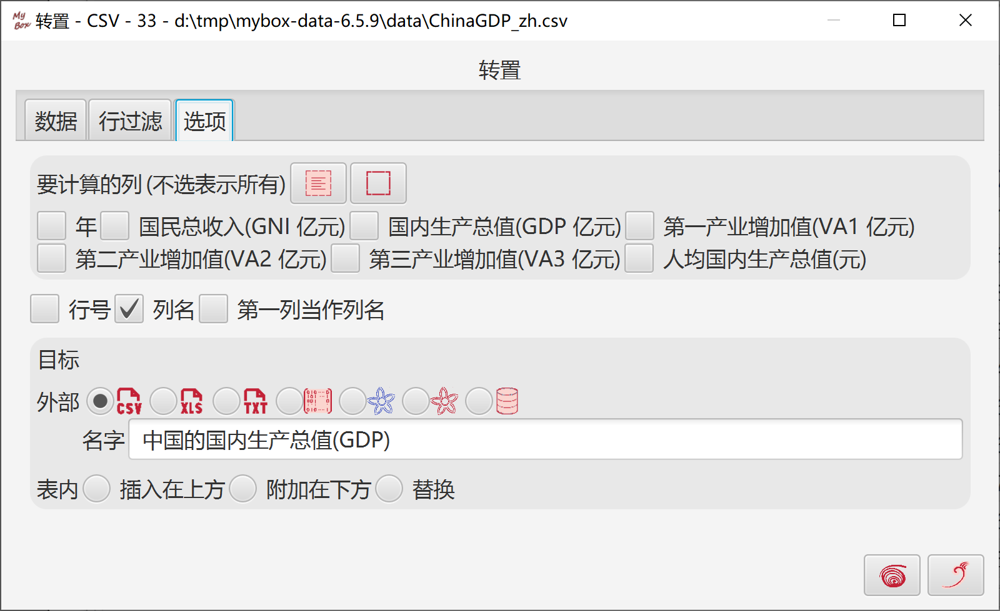
选择数据：
行可以是：当前页、选中的行、或所有页。
设置行过滤条件。
计算：
选择要计算的列。
可选按照：列、行、所有。
算法可选：最大最小值（可设置区间）、和（L1）、ZScore（L2）。
可选对非数字：略过、计为零。
选择要复制的列。
目标可为：新的csv/excel/文本文件、矩阵、系统粘贴板、MyBox粘贴板、数据库表。
当选择当前页或选中行时，目标还可以为：在表内指定位置插入、附加、或替换。
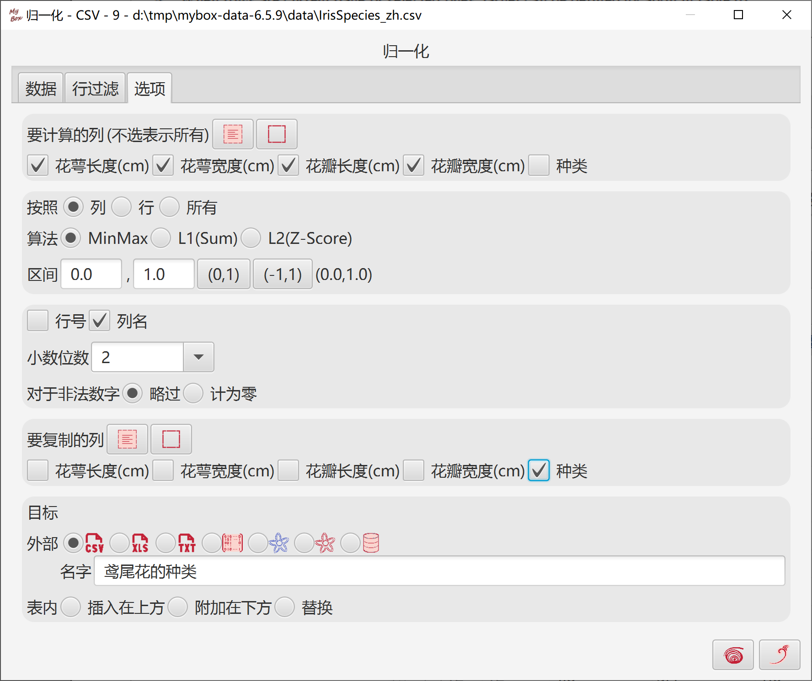
选择数据：
行可以是：当前页、选中的行、或所有页。
设置行过滤条件。
选项：
选择要复制的列。
按照"分割的尺寸":
被选择的行被划分为多个文件，每个文件包含定义的数据行数。
最后一个文件可能包含较少的数据行。
按照"分割个数":
被选择的行被尽可能划分为定义的文件个数。
若定义了行过滤，则生成的文件数可能会比预期的少。
按照"起止列表":
被选择的行被按照列表中的范围进行划分。
这些编号与"数据行号"进行比较。
编号基于1。范围包含"开始"和"结束"。
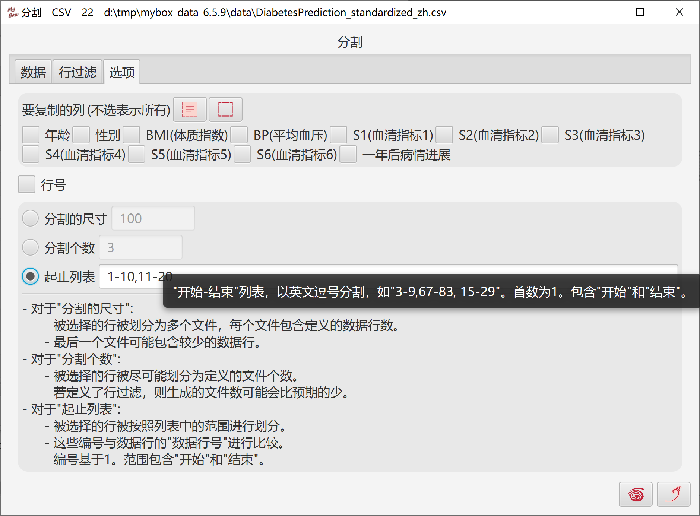
悬停或点击功能按钮，选择“计算”下的功能。
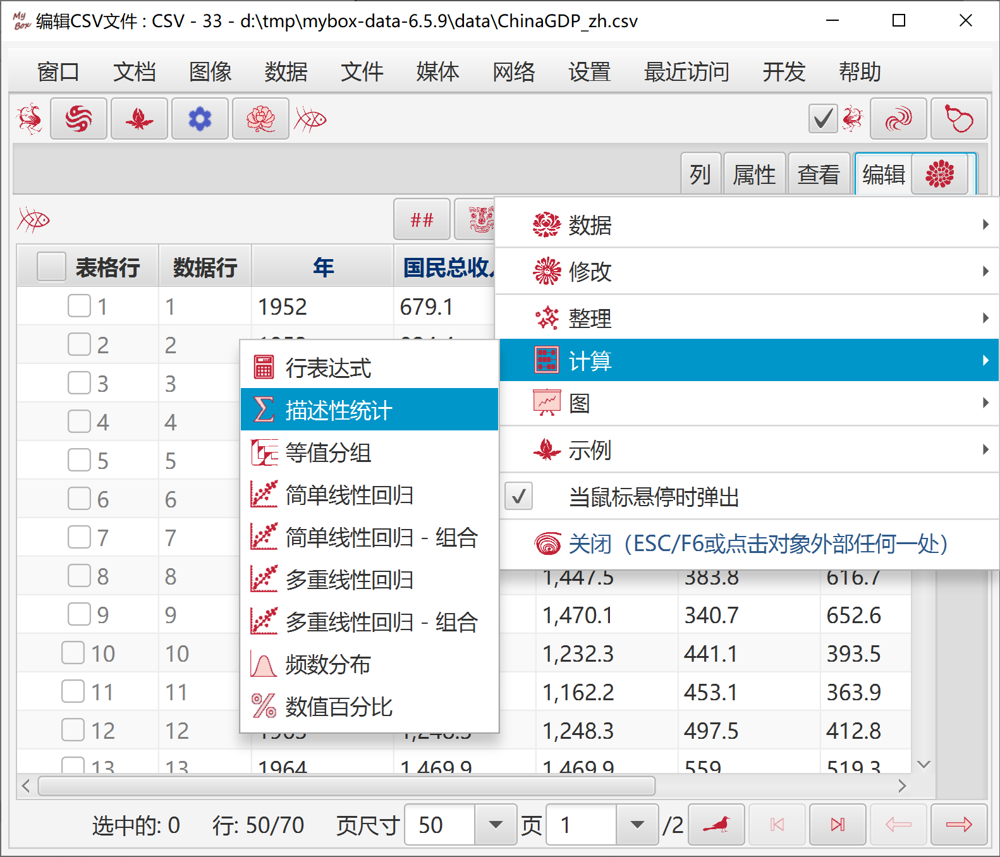
选择数据：
行可以是：当前页、选中的行、或所有页。
设置行过滤条件。
计算：
输入数值的名字
输入行表达式。
选择要复制的列。
目标可为：新的csv/excel/文本文件、矩阵、系统粘贴板、MyBox粘贴板、数据库表。
当选择当前页或选中行时，目标还可以为：在表内指定位置插入、附加、或替换。
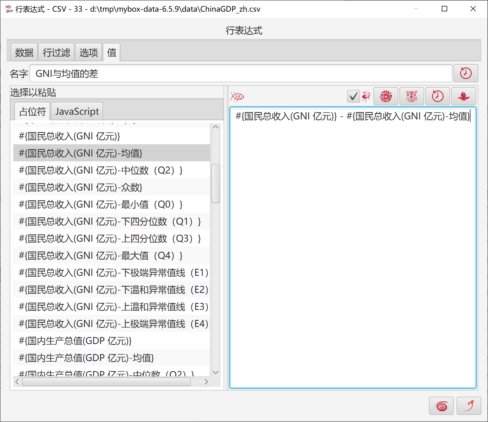
选择数据：
行可以是：当前页、选中的行、或所有页。
设置行过滤条件。
计算：
选择要计算的列。
选择要统计的值：
计数、合计、均值、几何平均数、平方和、总体方差、样本方差、总体标准差、样本标准差、斜度、最小值（Q0）、下四分位数（Q1）、中位数（Q2）、上四分位数（Q3）、最大值（Q4）、上极端异常值线（E4）、上温和异常值线（E3）、下温和异常值线（E2）、下极端异常值线（E1）、众数
选择按照：列、行（可选类比列）、所有。
设置小数位数。
可选对非数字：略过、计为零。
目标：新的csv/excel/文本文件、矩阵、系统粘贴板、MyBox粘贴板、数据库表，或者在表内指定位置插入、附加、或替换。
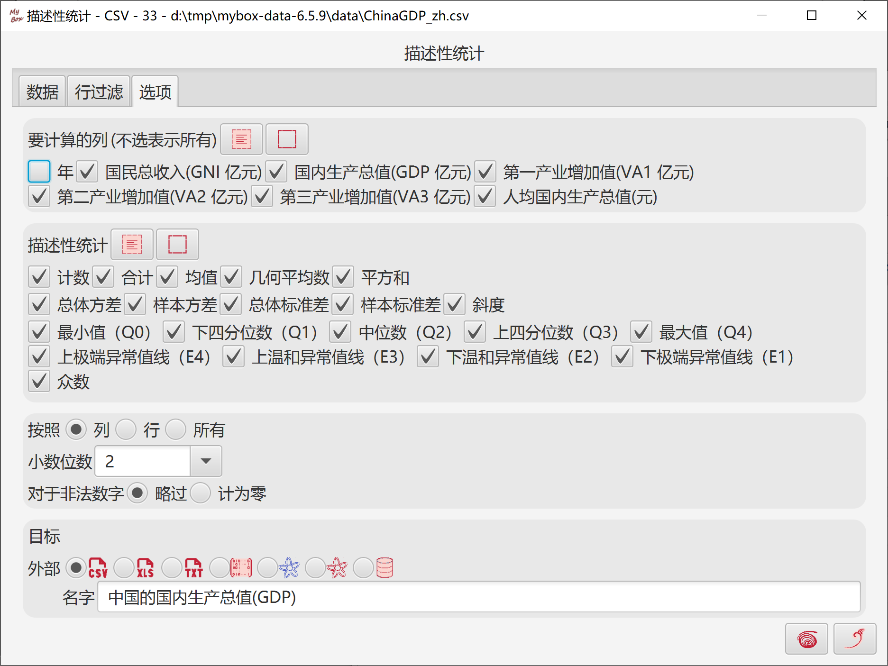
选择数据：
行可以是：当前页、选中的行、或所有页。
设置行过滤条件。
计算：
选择要分组的列，可以是多列，不必是数字。
选择要计算的聚集值，可以多选，可以不选。
“计数”总是被计算，所以不在选择之列。
涉及的值必须是数字。
选择要排序的值，可以多选，可以不选。
可以输入最多取结果行数，空/零/负值表示不限制。
对于非法数字，可选：设为空值、设为零。
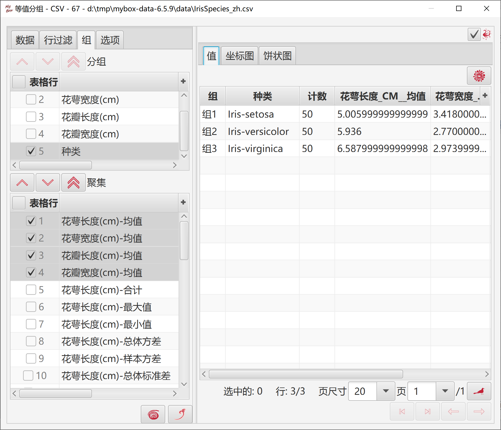
计算出来的分组及其聚集值，被显示为坐标图。
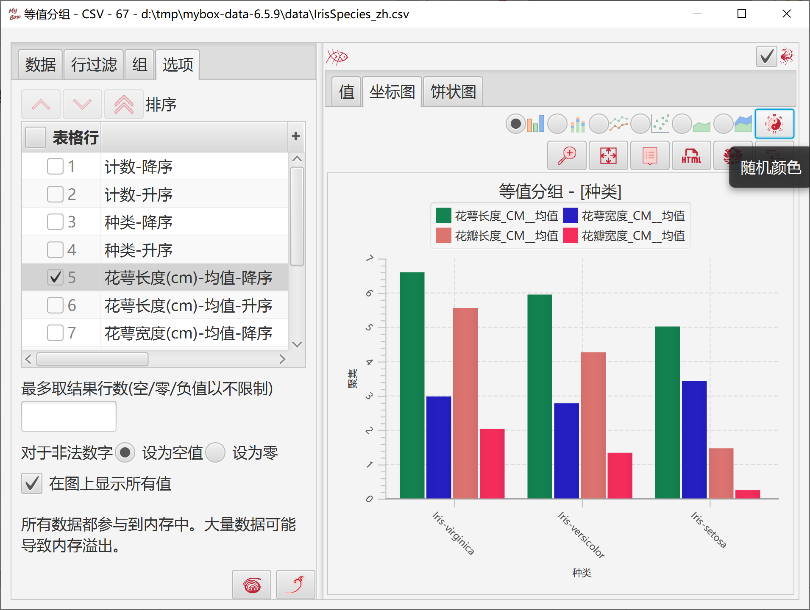
计算出来的分组及其计数，被显示为饼图。
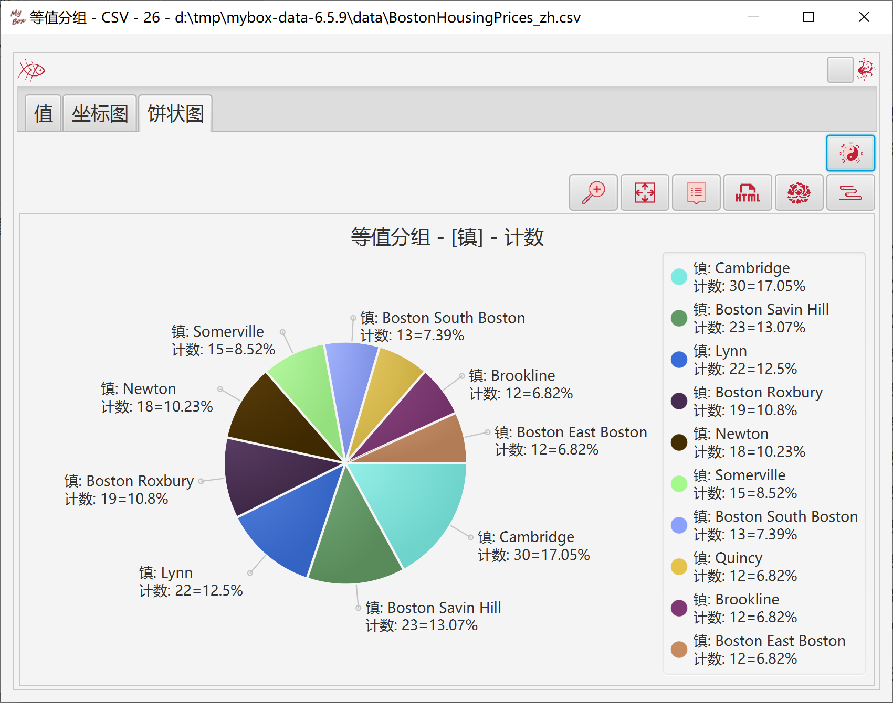
在图上：
若分组只包含一个列，则类别值就是此列的值。
若分组包含多个列，则类别值是组名。
可选是否在图上显示所有数据：
若选择，则大量数据可能导致内存不够
若不选，则只在图上显示结果的当前页。
计算可能数据溢出。
此工具基于Apache
Commons Math。
回归过程不存储数据，所以在处理很多数据时计算本身没有内存限制。
选择数据：
行可以是：当前页、选中的行、或所有页。
设置行过滤条件。
计算：
选择一列作为自变量。
选择另一列作为因变量。
选择是否包含截距
设置小数位数
在表格中显示回归每一步的数据值状态，包括：观察数、斜率、截距、判定系数（R方）、R值、均方差（MSE）、方差和（SSE）、总体平方和（SSTO）、回归平方和（SSR）等。
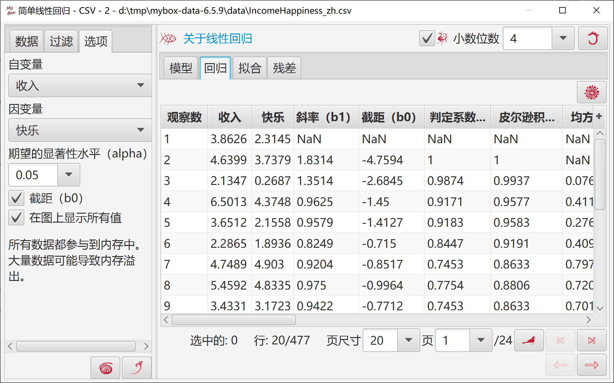
显示拟合的线性模型。
显示回归最后一步的数据值状态。
输入的自变量，可以生成预测值。
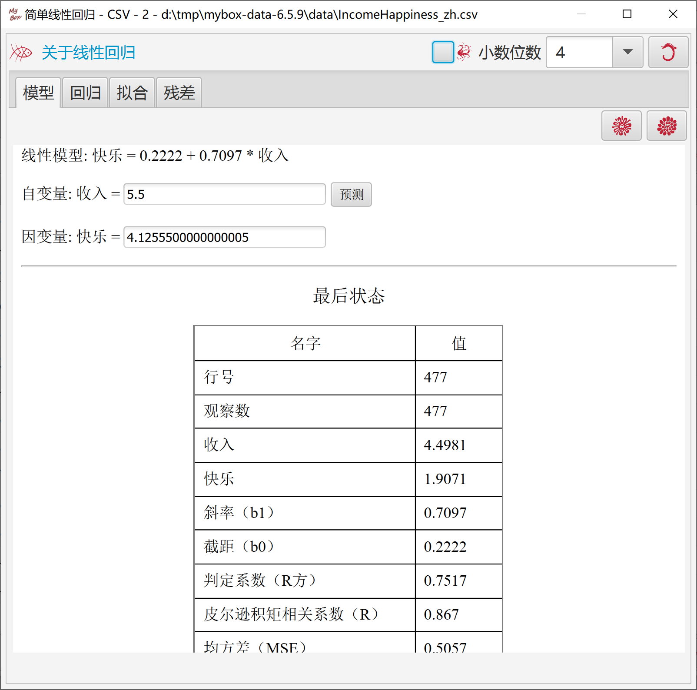
当处理所有数据行（所有页）时，选择是否在图上显示所有值。
若选择“在图上显示所有值”，则当图中加载很多数据时可能发生内存不够。
否则，图上只显示当前页的数据，同时所有页都参与回归，所以没有内存限制。
可设置布局、横轴、竖轴的参数。
可选择图上是否显示：拟合点、拟合线、模型描述。
可选择数据的标签形式。
可设置拟合点/线的随机颜色。
可弹出拟合图。
可生成包含拟合图及其数据的html。
在表格中显示拟合图的数据。
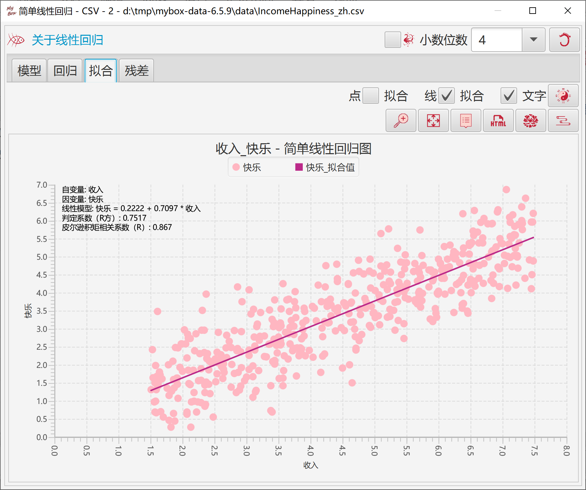
可选择X轴为：预期值、自变量、实际值。
可选择是否标准化残差。
当标准化残差时，显示Sigma2（95%）的上线和下线。
可设置散点的随机颜色。
在表格中显示残差图的数据。

此工具帮助生成简单线性回归的数据：
选择一些列作为自变量的候选。
选择一些列作为因变量的候选。
选择小数位数、alpha、是否包含截距。
点击"确定"按钮后，工具自动：
对候选列进行两两组合：一列作为自变量、另一列作为因变量。
计算这些简单线性回归模型。
把模型按判定系数（R-Square）从高到低排序
选择模型，点击"查看"按钮，以进一步查看它的回归数据、拟合图、和残差图。
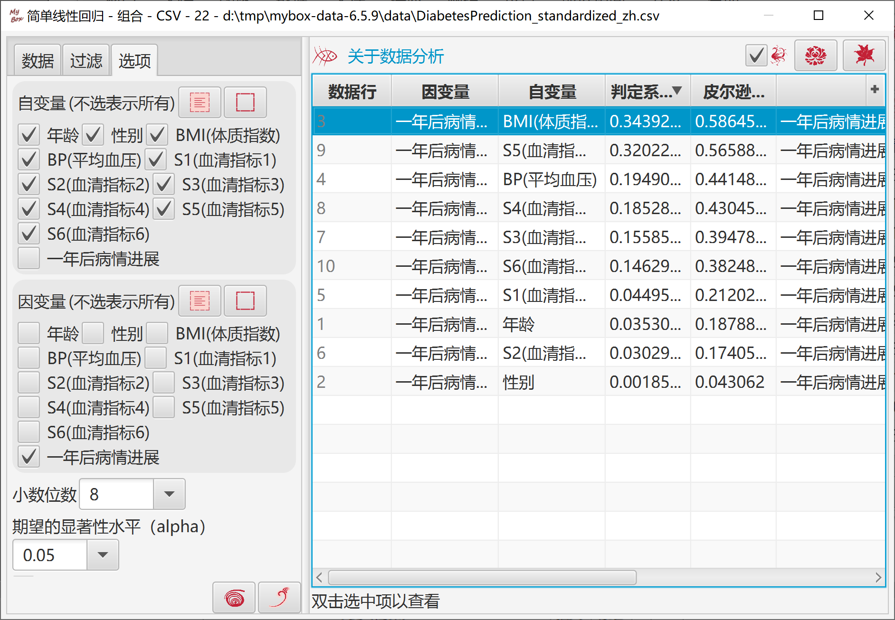
基于Apache Commons Math，此工具帮助生成多重线性回归的数据：
选择一些列作为自变量。所有数据必须是数字。
选择一列为因变量。数据必须是数字。
选择是否包含截距。
点击"确定"按钮后：
工具用Z-Score算法归一化所选数据。
工具用普通最小二乘法（OLS）计算多重线性回归模型。
结果包含：截距、系数、判定系数（R-Square）、调整后的R方。
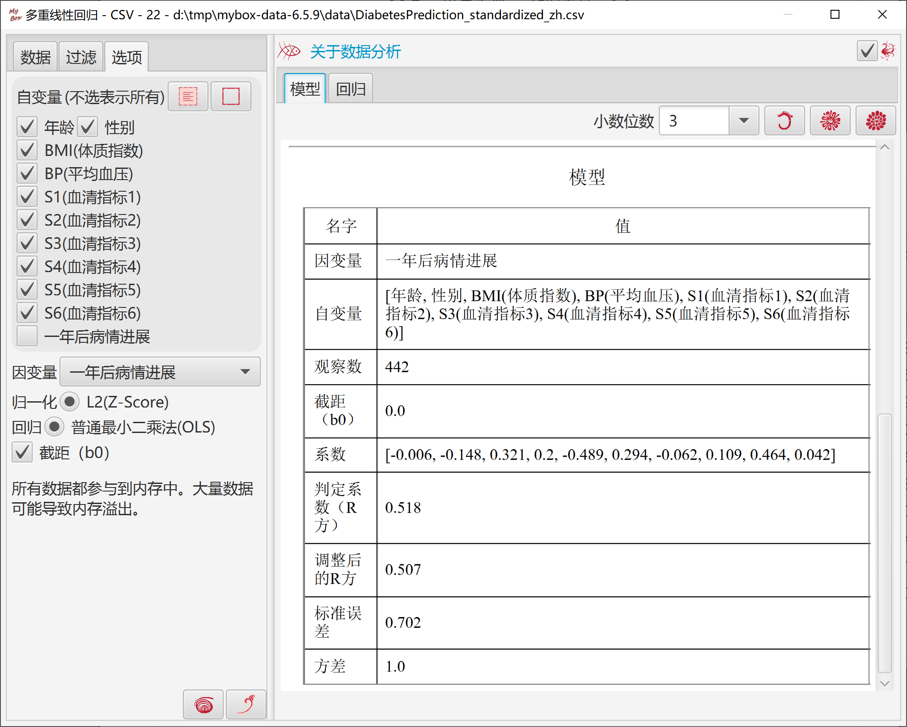
用户可以输入自变量的值，利用模型预测因变量的值。
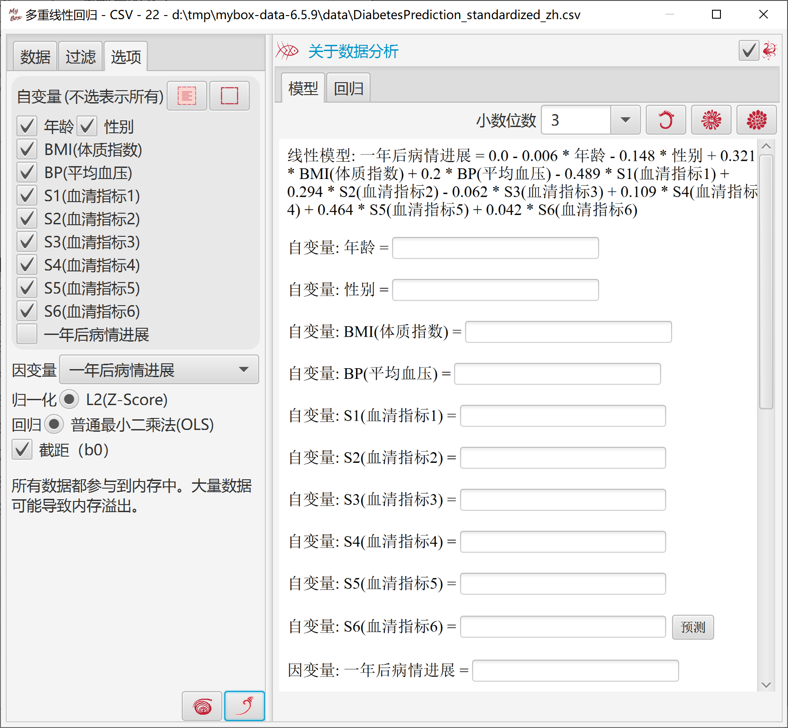
此工具帮助生成多重线性回归的数据：
选择一些列作为自变量的候选。
选择一些列作为因变量的候选。
选择是否包含截距。
点击"确定"按钮后，工具自动：
对候选列进行组合作为自变量和因变量。
计算这些多重线性回归模型。
把模型按调整后的判定系数从高到低排序。
选择模型，点击"查看"按钮，以进一步查看相应的回归数据。

选择数据：
行可以是：当前页、选中的行、或所有页。
设置行过滤条件。
计算：
选择一列计算频数。
选择是否忽略大小写
设置小数位数
目标可为：新的csv/excel/文本文件、矩阵、系统粘贴板、MyBox粘贴板、数据库表。
当选择当前页或选中行时，目标还可以为：在表内指定位置插入、附加、或替换。
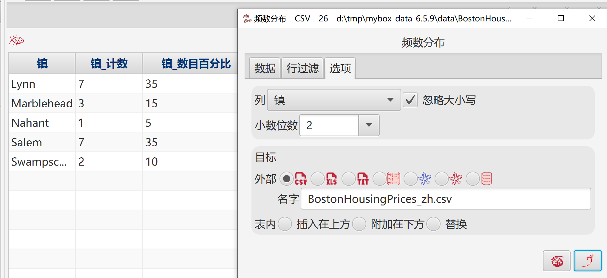
选择数据：
行可以是：当前页、选中的行、或所有页。
设置行过滤条件。
计算：
选择要计算的列，若不选则取所有列。
选择按照：列、行、所有
选择把负数计为：零、绝对值
设置小数位数
可选对非数字：略过、计为零。
选择要复制的列。
目标可为：新的csv/excel/文本文件、矩阵、系统粘贴板、MyBox粘贴板、数据库表。
当选择当前页或选中行时，目标还可以为：在表内指定位置插入、附加、或替换。
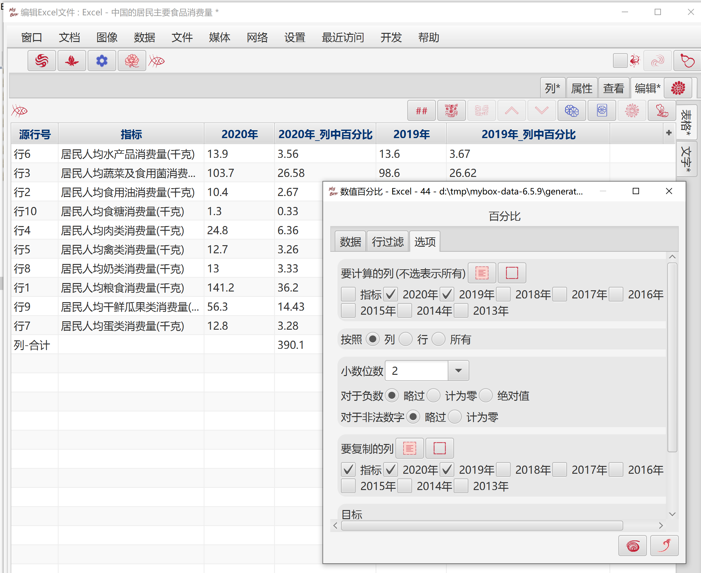
悬停或点击功能按钮，选择“图”下的功能。
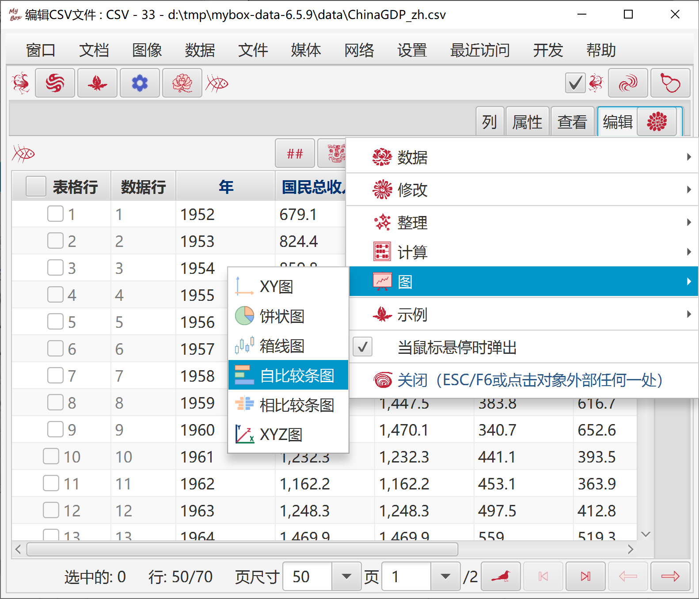
选择数据：
行可以是：当前页、选中的行、或所有页。
设置行过滤条件。
计算：
选择一列为“类别轴”，以定义数据名字。
选择多列为“数值轴”，不同的数值序列显示为不同颜色或者形状。
对于非法数字，可选：忽略、或计为零。
当处理所有数据行（所有页）时，坐标图需要考虑内存限制。
缺省情况下，“类别轴”是横向轴、“数值轴”是竖向轴。
选择XY图的类型。
点击“菜单”按钮以设置数据图的参数。
点击“弹出”按钮以在弹出窗口中显示当前图。
点击“数据”按钮以在数据表中显示坐标图的数据。
点击“网页”按钮以在网页中显示坐标图的数据。
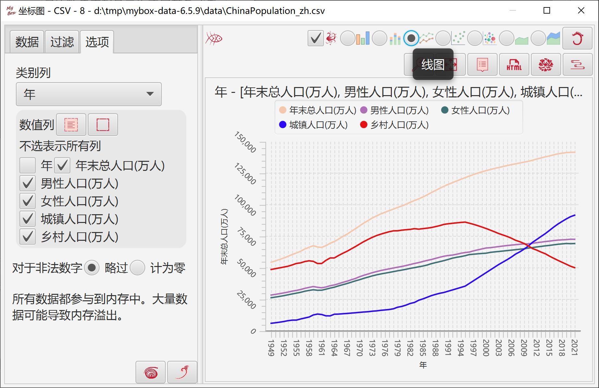
以条块的高度表示数据的大小。
类别列总是被当作字串处理。

以条块的高度表示数据的大小。
类别列总是被当作字串处理。
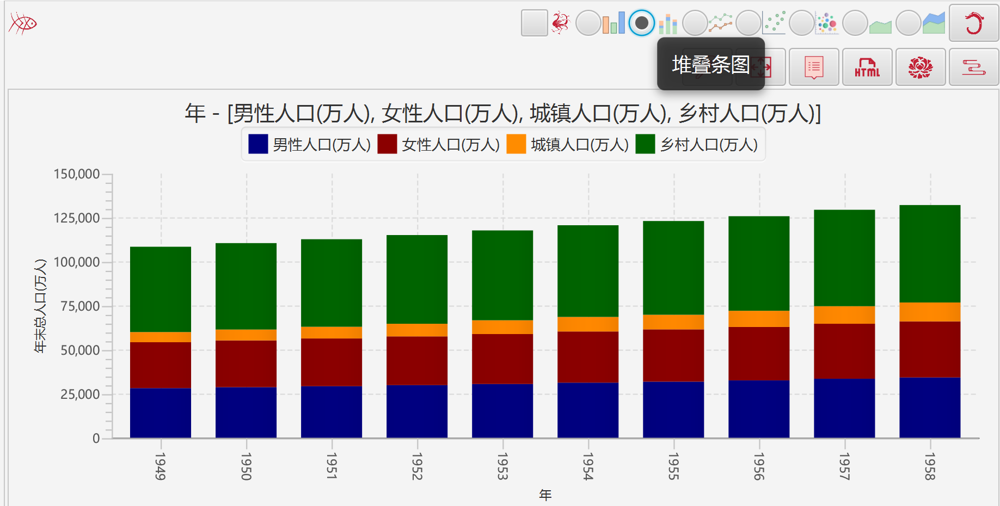
以连接点的线条表示数据的趋势。
类别列可以是数字或字串。

以符号表示数据的分布。
类别列可以是数字或字串。
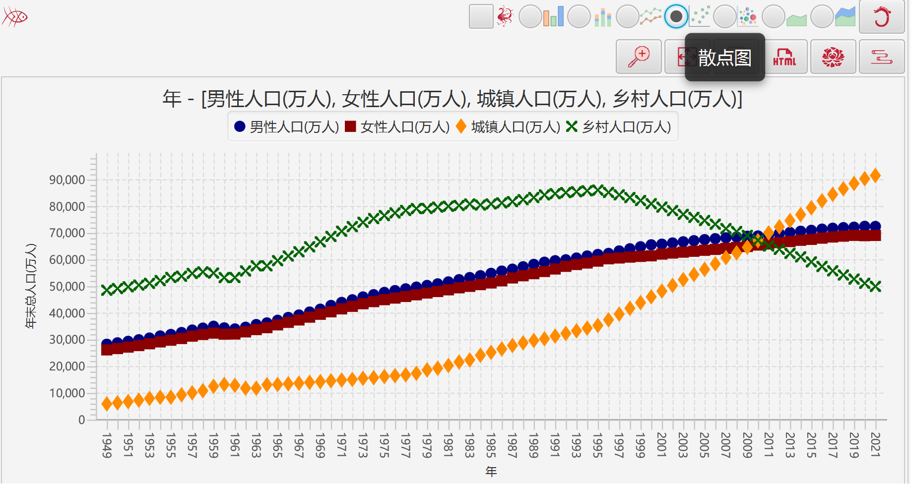
以不同半径的多个圆表示数据的大小。
“类别”列和“数值”列定义数据的坐标。
选择若干“大小”列，定义数据的大小。
所有列都必须是数字，大小列必须是非负数。
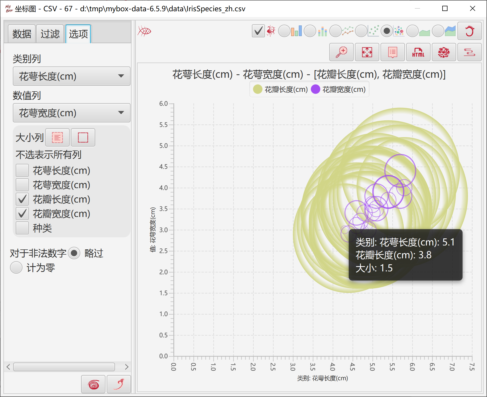
以面积表示数据的大小。
类别列总是被当作字串处理。
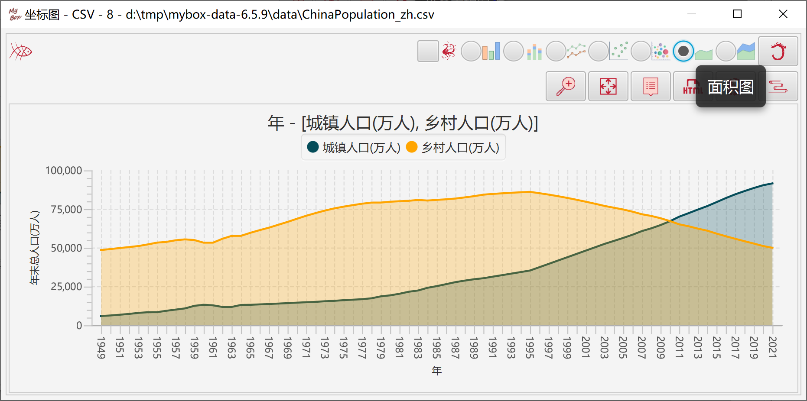
以面积表示数据的大小。
类别列总是被当作字串处理。
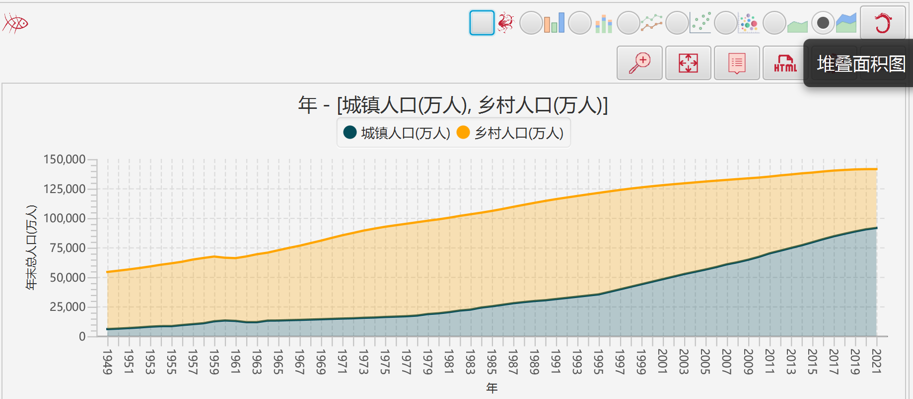
标签，可选：不显示、点、值、类别。
标签位置
标签字体大小
小数位数
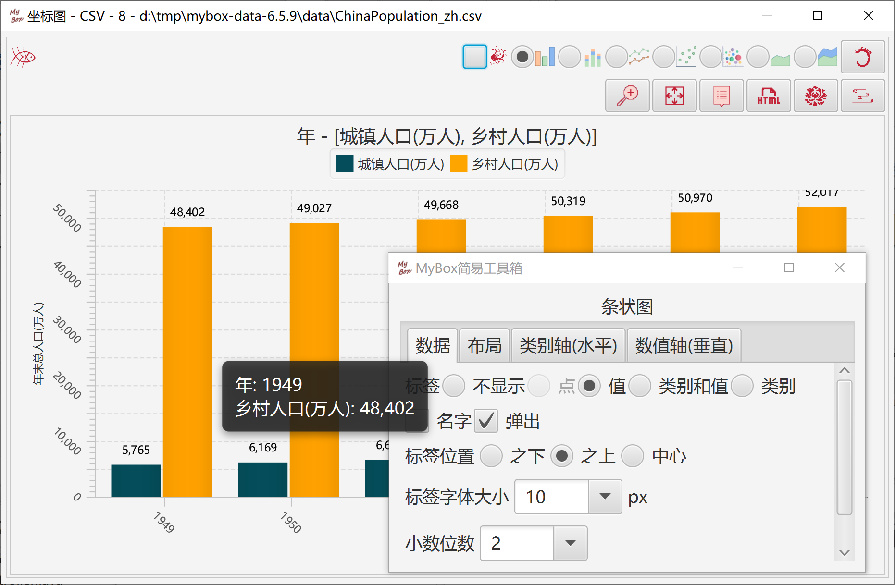
设置面板：标题、字体、图例位置、是否显示零度线/网格线、线宽等。
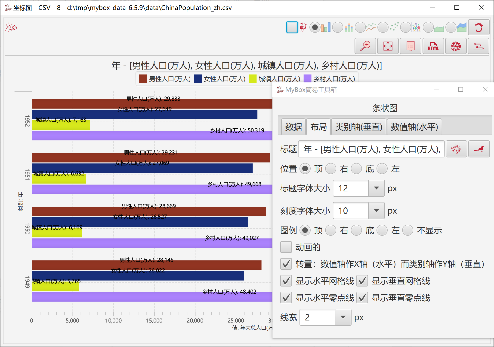
设置类别轴：标签、字体、位置、刻度、当作字串处理还是数字处理、坐标等。
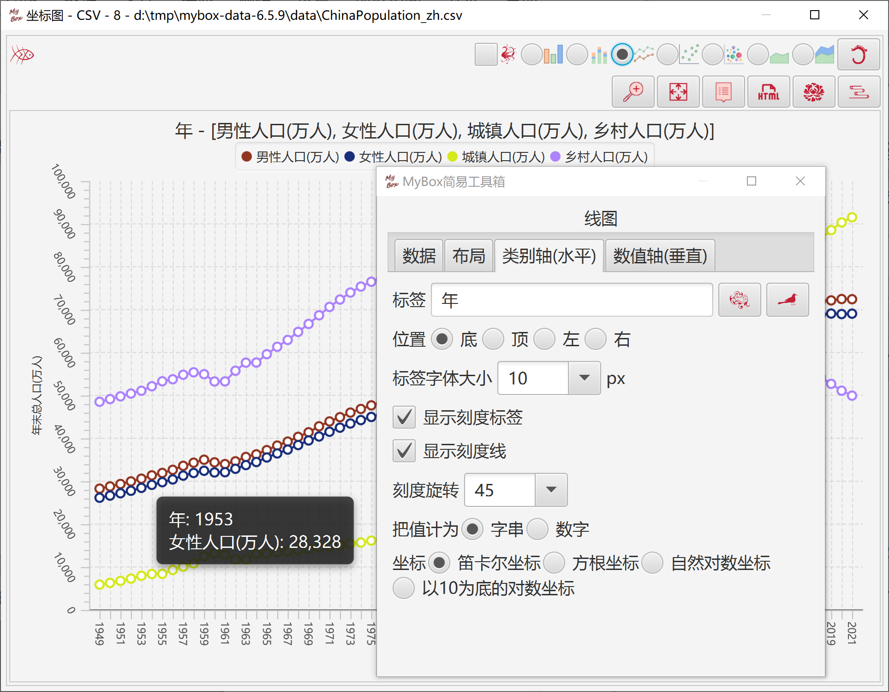
设置数值轴：标签、字体、位置、刻度、坐标等。
选择数据：
行可以是：当前页、选中的行、或所有页。
设置行过滤条件。
计算：
选择一列为“类别”。
选择一列为“数值”。
以分割的圆表示数据的比例。
数值列必须都是非负数。
当处理所有数据行（所有页）时，饼图需要考虑内存限制。
点击“菜单”按钮以设置数据图的参数。
点击“弹出”按钮以在弹出窗口中显示当前图。
点击“数据”按钮以在数据表中显示坐标图的数据。
点击“网页”按钮以在网页中显示坐标图的数据。
箱线图用来展示数据的分布：
数据按照列/行/全部来升序排序
以下项可以显示出数据的聚集性和离散性：
最小值
Q0 = 位于数据列的
0%（开头）
下四分位数
Q1 = 位于数据列的
25%
中位数
Q2 = 位于数据列的
50%（中部）
上四分位数
Q3 = 位于数据列的
75%
最大值
Q4 = 位于数据列的
100%（结尾）
以下项可以用于标识数据的异常值：
下极端异常值线
E1 = Q1 - 3
* ( Q3 - Q1 )
下温和异常值线 E2
= Q1 - 1.5 * ( Q3 - Q1 )
上温和异常值线 E3
= Q3 + 1.5 * ( Q3 - Q1 )
上温和异常值线 E4
= Q3 + 3 * ( Q3 - Q1 )
以下项可以用于离散性的参考：
均值
= 数据的平均数
计算：
基于线图。
选择按照：列、行（选择类别列）、所有.
设置或选择：
箱子的宽度。
是否显示异常值线或均值。
是否显示各类数值的连线、是否虚线。
随机颜色。
点击“菜单”按钮以设置数据图的参数。
点击“弹出”按钮以在弹出窗口中显示当前图。
点击“数据”按钮以在数据表中显示坐标图的数据。
点击“网页”按钮以在网页中显示坐标图的数据。
自比较条图用来对比数据与参考值。以下规则用来计算所选数据值的颜色条：
若值等于零，不显示条
当按绝对值比较时：
最大值
=
列/行/所有的最大绝对值
百分比
= 值的绝对值
/ 最大值
宽度
= 最大宽度
* 百分比
颜色
= 若值大于零，
为列的颜色；若值小于零，为列的颜色的反色
当按最大最小值区间比较时：
最大值
=
列/行/所有的最大值
最小值
=
列/行/所有的最小值
百分比
= （值
- 最小值）/
（最大值 -
最小值）
宽度
= 最大宽度
* 百分比
条的颜色
= 列的颜色
数据：选择表中行、或所有数据行（所有页）。
计算：
选择要计算的列、和要复制的列。
选择比较：列、行、所有
选择按照：绝对值、最大最小区间
当处理所有数据行（所有页）时，自比较条图需要考虑内存限制。
设置或选择：
最大宽度。
是否显示行号、值、百分比、类别、计算出来的值。
编辑图中数据
编辑图的html
相比较条图用来对比两类数据。以下规则用来计算颜色条：
若值等于零，不显示条
当按绝对值比较时：
最大值
=
两个值列的最大绝对值
百分比
= 值的绝对值
/ 最大值
宽度
= 最大宽度
* 百分比
颜色
= 若值大于零，
为列的颜色；若值小于零，为列的颜色的反色
当按最大最小区间比较时：
最大值
=
两个值列的最大值
最小值
=
两个值列的最小值
百分比
= （值
- 最小值）/
（最大值 -
最小值）
宽度
= 最大宽度
* 百分比
条的颜色
= 列的颜色
数据：选择表中行、或所有数据行（所有页）。
计算：
选择类别列（非必要）
选择两个数值列
选择按照：绝对值、最大最小区间
当处理所有数据行（所有页）时，自比较条图需要考虑内存限制。
选择要复制的列。
设置或选择：
最大宽度。
是否显示行号、值、百分比、类别、计算出来的值。
编辑图中数据
编辑图的html
选择数据：
行可以是：当前页、选中的行、或所有页。
设置行过滤条件。
选择数据轴：
选择一列为“X轴”，可选是否计为字符串，不选则计为数字。
选择一列为“Y轴”，可选是否计为字符串，不选则计为数字。
选择多列为“Z轴”，可选是否计为字符串，不选则计为数字。
选择其它要在标签中弹出的值。
设置图参数：选择投影、颜色、宽度、高度、是否深色模式、点的尺寸。
选择数据：
行可以是：当前页、选中的行、或所有页。
设置行过滤条件。
选择数据轴：
选择一列为“X轴”，可选是否计为字符串，不选则计为数字。
选择一列为“Y轴”，可选是否计为字符串，不选则计为数字。
选择一列为“Z轴”，可选是否计为字符串，不选则计为数字。
选择其它要弹出的值。
设置图参数：选择投影、颜色、宽度、高度、是否深色模式、是否显示网格。

悬停或点击功能按钮，选择“数据”下的功能。
选择数据：
行可以是：当前页、选中的行、或所有页。
选择列，若不选则取所有列。
设置行过滤条件。
目标文件格式：csv、文本、excel、xml、json、html、pdf。
可以设置目标文件的选项。
可按最大行数分割导出后的文件。
选择数据：
行可以是：当前页、选中的行、或所有页。
设置行过滤条件。
选择要复制的列
选择是否导入数据。
生成自增主键、或选择主键列。

数据文件
当csv/excel/文本数据文件被相应编辑器打开时，增加/修改此文件的记录。
数据保存在数据文件中。
删除数据文件的记录不会导致数据文件本身被删除。
数据粘贴板
当数据复制到MyBox粘贴板中时，增加此数据的记录。
数据保存在MyBox内部目录下的文件中。
删除数据粘贴板的记录将会同时删除它的内部文件。
矩阵
在矩阵管理器中增删改矩阵。
数据保存在MyBox数据库中。
删除矩阵的记录将会同时删除矩阵包含的数据。
数据库表
在数据库表管理器中增删改数据库表。
数据保存在MyBox数据库的表中。
删除数据库表的记录将会同时删除数据库表包含的数据。
分别选择两个数据的行列：
行可以是：当前页、选中的行、或所有页。
选择列，若不选则取所有列。
设置行过滤条件。
拼接选项：
方向：横向、纵向。
行/列数按照：数据A、数据B、较长的、较短的。
目标可为：新的csv/excel/文本文件、矩阵、系统粘贴板、MyBox粘贴板、数据库表。
在文件中:
一般地，首行（头）定义列名，其余每行定义一行数据。
值被"分隔符"分离。分隔符可以是字符串。
若值包含分隔符，它将被引号围起来。
若行以"#"开头，则它将被略过。
首次打开文件时，工具猜测它的分隔符和字符集。
当文件读取异常时，改变选项然后点击按钮“刷新”。
数据被分页。当页数大于1时，运行一些功能之前必须保存当前页的修改。
选项包括：文件的字符集、是否以第一行作为字段的名字、字段的分隔符。
对于字符串数据支持编辑和保存多行。
数据可以保存为不同的字符集和换行符。
在文件中:
一般地，首行（头）定义列名，其余每行定义一行数据。
值被"分隔符"分离。分隔符可以是字符串。解析文件时支持规则表达式。
值不能包含分隔符。
若行以"#"开头，则它将被略过。
首次打开文件时，工具猜测它的分隔符和字符集。
当文件读取异常时，改变选项然后点击按钮“刷新”。
数据被分页。当页数大于1时，运行一些功能之前必须保存当前页的修改。
选项包括：文件的字符集、是否以第一行作为字段的名字、字段的分隔符。
不支持数据值多行。
数据可以保存为不同的字符集和换行符。
选择一个工作表单以处理。
可以添加/重命名/删除工作表单。
在文件中，一般地，首行（头）定义列名，其余每行定义一行数据。
当文件读取异常时，改变选项然后点击按钮“刷新”。
数据被分页。当页数大于1时，运行一些功能之前必须保存当前页的修改。
对于字符串数据支持编辑和保存多行。
数据可以只保存当前表单、或者保存全部表单。
注意：工具只能处理Excel文件的基本数据。
如果文件包含格式、风格、公式、或图，建议把修改保存为新文件以免数据丢失。
源文件格式：csv、excel、文本。可以设置源文件的选项。
目标文件格式：csv、文本、excel、xml、json、html、pdf。可以设置目标文件的选项。
可按最大行数分割转换后的文件。
可以设置源文件的选项。
可以设置目标格式。

包括：转置、行阶梯形、简化行阶梯形、行列式值-用消元法求解、行列式值-用余子式求解、逆矩阵-用消元法求解、逆矩阵-用伴随矩阵求解、矩阵的秩、 伴随矩阵、余子式、归一化、乘以数值、除以数值、幂。
包含：加、减、乘、克罗内克积、哈达马积、水平合并、垂直合并。
可以查看表定义
可以执行SQL
最大长度为128。
“普通标识符”
指未用双引号包围的标识符：
只能由字母、数字、和下划线(_)构成。
只能由字母开头。
字母和数字可以是Unicode（可以是中文）。
不能是SQL保留字。
当保存在数据库中，它被转换为大写的。
当在SQL语句中引用它时，忽略大小写。
例如，AbC等同于abc和aBC。
“定界标识符”
指用双引号包围的标识符。
可以包含任何字符。
当保存在数据库中时，它只取双引号包围的字串。
当在SQL语句中引用它时，必须用双引号包围它，除了以下情形：它只包含大写字母和下划线。
例如,
“AbC"不同于AbC或"ABC”，而"ABC"等同于ABC和aBc.
当MyBox创建表名或列名：
非法字符将被转换为下划线。
若标识符开头不为字母，则字符"a"将被加到前面。
数据库表被创建以后：
不能修改和删除主键的定义。
可以添加和删除列定义，但是不能修改列定义。
数据库表有一个特殊的菜单项：“功能”- “整理”- “查询”，可以帮助方便地输入和执行SQL查询语句：
表名和列名被列在左边
提供示例、记录历史

JShell提供交互执行"snippets"的能力，即"读取-执行-输出"循环 (REPL)。
"Snippet"是Java编程语言的单个表达式、语句、或声明的代码：
语句结尾必须有分号，而表达式不需要。
可以定义变量和方法、然后调用它们。
外部Java类应当可访问：
JShell取系统环境中CLASSPATH。
其它Jar文件或路径可以附加在CLASSPATH后面。
除了基本类，在调用多数Java类之前需要把它们导入进来。
JShell可以用于科学计算、和调试Java代码。
此工具帮助图形化运行JShell:
输入若干snippet，然后点击 "开始"按钮以执行它们：
Snippets被逐个计算。
Snippets的结果会影响后续的snippets，即如"一个运行环境"。
所有已执行过的snippets的属性被显示在一张表中。
点击按钮"删除"或"清除"以把一些或全部snippets从当前环境中移除出去。
点击按钮"重置"以清零JShell，环境将变为空白。
按下"CTRL+1"可以弹出代码的完成建议列表。
若已添加了MyBox类路径，则可以引用MyBox的所有方法。
JShell代码被组织为树形，并提供示例。
JEXL（Java表达式语言）是一个库文件，以变量和脚本来动态生成值：
JEXL与Java的语法有所不同，它更像是javascript。
在运行表达式/脚本之前，其中所有变量应当在JexlContext中有值。
创建Java类的实例为本地变量以引用它们。当用“new”时注意写全包名。
JEXL可用于科学计算和数据处理。
此工具帮助图形化运行JEXL：
输入JEXL表达式或脚本。
注意：用单引号而不是双引号来围住字符串。
按以下格式输入Java代码，以设置JexlContext：
jexlContext.set(“name”,
value);
例如，设置以下语句以在表达式/脚本中使用Math.PI：
jexlContext.set(“Math”,
Math.class);
输入JEXL脚本的参数（如果有）。以逗号分隔。
点击按钮“开始”以计算表达式/脚本。
MyBox在JShell环境下自动执行以下步骤：
把MyBox的库路径加到CLASSPATH。
导入必要的JEXL包。
运行JexlContext代码。
带上参数（如果有）计算表达式/脚本。
若所有变量和参数都有合法的值，则结果显示在右边面板中。
JEXL代码被组织为树形，并提供示例。

编辑JavaScript代码。
脚本可以包含WebEngine可以解析的任何合法元素(ECMAScript 6)。
运行脚本。
它的结果显示在右边的面板中。并且它也会影响右边面板中的网页。
Javascript代码被组织为树形，并提供示例。
此工具帮助管理和计算数学函数。
列出函数的变量名，以英文逗号分割。变量名应符合JavaScript要求:
可以包含字母、数字、'-'、'_'、和unicode（如中文）
不能以数字开头。
定义函数表达式为一段JavaScript代码：
此脚本可以包含Nashorn可以解析的任何合法元素(ECMAScript 5.1)。
它应当最终是一个数字。
它可以引用给出的变量，但是不要申明它们。
定义函数的定义域为一段JavaScript代码：
空白表示定义域为所有实数。
此脚本可以包含Nashorn可以解析的任何合法元素(ECMAScript 5.1)。
它应当最终是一个布尔值（真或假）。
它可以引用给出的变量，但是不要申明它们。
给出计算结果的名字。
数学函数被保存为树形。
提供示例。
在工具计算脚本时，'var 变量名=<变量值>;' 被插入到脚本的前面，然后开始计算。
若定义域脚本不为空，则插入给定的变量值并且检查结果。
若为真，则继续计算函数表达式的脚本。否则跳过此组变量值。

给定范围、间隔、和小数位数，可以生成函数的数据集。
对于一元函数，可以显示函数的XY图， 包括散点图和线图。
对于二元函数，可以显示函数的XYZ图， 包括三维散点图和曲面图。
整型数值（integer/long/short）的无效值是最小值（MIN_VALUE）
双精度数值的无效值是最大值（Double.MAX_VALUE）
CGCS2000（中国大地坐标），真实位置，近似于WGS_84(GPS)坐标。
GCJ-02（中国加密坐标），经过加密的数据，与真实位置有偏差。
WGS-84（GPS），真实位置
BD-09（百度加密坐标），基于GCJ-02
Mapbar（图吧坐标），基于GCJ-02
当坐标系统未定义或非法时，缺省值为CGCS2000。
数据处理时均用经纬度的小数而不是“度分秒”（DMS）。
MyBox提供“位置工具”以帮助转换坐标的小数和度分秒。
经度有效值范围：-180~180，纬度有效值范围：-90~90。
日期时间，如：2014-06-11 13:51:33
日期，如：2014-06-11
年，如：2014
月，如：2014-06
时间，如：13:51:33
带毫秒的时间，如：13:51:33.261
带毫秒的日期时间，如：2014-06-11 13:51:33.261
带时区的日期时间，如：2020-09-27 12:29:29 +0800
带毫秒和时区的日期时间，如：2020-09-27 12:29:29.713 +0800
日期和时间之间可以有或没有“T”。“2014-06-11T13:51:33”等同于“2014-06-11 13:51:33”。
“0
AD” = “1 BC” = “0” = “-0” = “0000” = “-0000” =
“0001-01-01 00:00:00 BC” = “公元前1”
= “公元前0001-01-01
00:00:00”
“1 AD” = “1” = “0001” = “0001-01-01
00:00:00” = “0001-01-01 00:00:00 AD” = “公元1”
= “公元0001-01-01
00:00:00”
“202 BC” = “-203” = “-0203” = “-0203-01-01
00:00:00” = “0202-01-01 00:00:00 BC” = “公元前202”
= “公元前0202-01-01
00:00:00”
“202 AD” = “202” = “0202” = “0202-01-01
00:00:00” = “0202-01-01 00:00:00 AD” = “公元202”
= “公元0202-01-01
00:00:00”
2020-07-13
11:30:59
-2020-07-13
11:30:59
-581-01-23
960
公元960
公元前770-12-11
公元前1046-03-10
10:10:10
202 BC
960-01-23 AD
1046-03-10 10:10:10 BC
增/删/改/复制/清除/刷新。
查询数据：
定义和管理查询条件。
当前查询条件被显示在"信息"页签上。
符合条件的数据分页显示在"数据"表中。
数据行可以按数据值显示不同颜色。
导入数据，csv格式：
文件编码是UTF-8或ASCII。
第一行定义数据头，以英文逗号分隔。
其余每行定义一条数据，字段以英文逗号分隔。
字段的顺序随意。
必要字段都应占位，但不一定必须有值（与具体数据有关）。
可选是否替换已存在的数据。预定义数据或者示例数据总是替换。
导出数据：
定义和管理导出条件。
导出的数据字段可选。
导出格式可选：csv、xml、json、xlsx、html、pdf。
可选择导出文件的分割行数。
可导出当前数据页。
删除数据：
定义和管理删除条件。
预定义的数据无法被删除。
被引用的数据（如外键引用）无法被删除。
定义、管理、和应用"条件"：
"条件"被用来执行：查询、删除、导出。
在面板中设置条件：
数据条件形成树结构，树结点可以多选。
排序的字段可以多选，顺序可调。
编辑条件：标题、where、order by、fetch，它们被拼接成最终条件。
管理条件：增/删/改/复制。
被执行过的条件被自动保存。
最近执行过的条件被列出在按钮的弹出窗口中。
显示在地图上的数据可以是：
满足当前查询的所有数据。可以设置“最多个数”以免性能问题。
当前数据页。
天地图：
接受CGCS2000坐标数据，并把它们显示为无偏差的正确位置。
对于其它坐标数据，MyBox把它们转换为CGCS2000以显示正确位置。
可选投影：EPSG:900913/3857（球面墨卡托）、EPSG:4326（经纬度直投）。
可选控件：缩放、缩放比例、地图类型、符号。
地图类型：地图、卫星、卫星混合、地形、地形混合。
地图自带语言
地图级别为1-18
高德地图：
接受GCJ-02坐标，并把它们显示为无偏差的正确位置。
对于其它坐标数据，MyBox把它们转换为GCJ-02以显示正确位置。
投影为EPSG:900913/3857（球面墨卡托）。
图层：
可多选：标准图层、卫星图层、路网图层、交通图层。
外国坐标不支持路网图层和交通图层。
部分外国坐标支持卫星图层。
可分别设置每个图层的不透明度。
地图的语言：中文、英文、中英文。
地图级别为3-18
可选“适应地图”，即将地图自动调整为可以显示所有数据的最佳大小和位置。
调整地图级别：
滑动鼠标滚轮。
点击地图控件。
选择“地图尺寸”。
标注图片：
可选：点（泡泡）、圆形、任意图片
对于位置数据，还可选：数据集图像、数据图像。若无有效值，则为点。
可设置标记图片的尺寸（长宽相同）。
标注文字：
可选：标签、坐标、地址。
对于位置数据，还可选：开始时间、结束时间、数据值等。
可多选。每个选择显示为一行。
可设置标记文字的尺寸。
可选是否粗体。
可设置标记文字的颜色。对于位置数据，还可选：数据颜色。
弹出信息：
鼠标放在标注上则可弹出更多信息。
可选是否弹出。
截图：
可设置截图分辨率。
把当前地图和图中数据截取为html
地图的数据密钥可以在“设置”里修改。 缺省的密钥是所有MyBox用户共享的免费密钥。
基本属性：标识、级别、经度、纬度、中国名、英文名、5个代码、5个别名。
从属属性：属主、洲、国家、省、市、县、镇、村、建筑。（构成"祖先"）
辅助属性：高度、精度、坐标系统、面积（平方米）、人口、注释、是否预定义。
必须有值：标识、级别、中文名或英文名
“级别"的可取值：全球（只能是"地球”）、洲、国家、省（州）、市、县（区）、镇（乡）、村（居委会）、建筑、兴趣点。
数据不必逐级从属，即可以跨级定义，例如：一个村庄直接属于南极洲；又如：城市直接属于国家，而没有省/州一级。
匹配数据：
以下方式之一可以确定一个地址：
匹配数据标识（由MyBox自动赋值）。这是精确匹配。
匹配"级别" + “祖先” + “中文名"或"英文名"或任一别名”。这是精确匹配。
匹配"级别" + “中文名"或"英文名"或任一"别名”。这是模糊匹配，可能有同级重名导致匹配错误的情况。
匹配名字或者别名时，不区分大小写。
有时候"代码"（code1/2/3/4/5）也可以辅助查找。
数据的"从属关系"只能从位置树上选择。
数据的级别必须比祖先低。
数据必须有中文名或者英文名。
可在地图上选择/显示坐标。
对选择的数据项设置为：“预定义的数据”、或"输入的数据"。
地理代码按级别和从属关系形成一棵树，可多选
洲、国家、中国的省/市/县。 国家的"面积"和"人口"有有效值。
下载地址：
https://github.com/Mararsh/MyBox_data/tree/master/md/GeographyCode
以下为必要字段：
Level,Longitude,Latitude
以及"Chinese
Name"或 “English
Name”
以下是可选字段：
Altitude,Precision,Coordinate
System,Square Kilometers,Population,
Code 1,Code 2,Code 3,Code
4,Code 5,Alias 1,Alias 2,Alias 3,Alias 4,Alias
5,
Continent,Country,Province,City,County,Town,Village,Building,Comments
下载地址：
http://download.geonames.org/export/zip/
以制表符分隔的文本，编码为UTF-8。
字段：
countryCode
postalCode placeName
adminName1 adminCode1 adminName2 adminCode2
adminName3 adminCode3
latitude longitude accuracy
坐标系统是WGS_84。
同一地址只写一次，即使它有多个邮编或者坐标。
定制数据行颜色。
提供"缺省"和"随机"按钮。

基本属性：数据集、标签、经度、纬度、开始时间、结束时间。
辅助属性：地址、高度、精度、坐标系统、速度、方向、数据值、数据规模、图像、说明。
每个位置数据都属于一个数据集。
数据集定义其所包含的位置数据的共同属性，包括：
时间格式
对于公元后的时间是否省略“公元”
文字的颜色
图像
这些属性有助于在地图上显著区分数据点。
数据集列表，可多选
时间树（开始时间），可多选
开始显示地图数据时，以第一个数据为地图中心。
位置分布：所有数据全部显示在地图上。
时间序列：
按“开始时间”升序逐帧显示数据
若选择“累加”，则已显示帧的数据点不被抹除，即数据点逐帧叠加。
若选择“时间叠加”，则凡是时间区间与当前帧的时间区间有重叠的数据都算作当前帧的有效数据。
例如，当前帧的开始时间是“公元前1044”、结束时间是“公元前221”，则所有起止区间与这个时间段有重合的数据都显示在当前帧中。
若选择“移到中心”，则每帧都会调整地图中心。
若选择“链接”，则显示相邻两帧的连线。
注：只有天地图的国内地址才正常显示连线。
帧控制：
可以设置时间间隔
可以选择帧（开始时间）
暂停/播放
前/后帧
是否循环播放
对于“位置分布”，可选
html：数据和当前帧的截图
当前帧的截图。格式自选。
对于“时间序列”，还可以选择：
jpg：所有帧的截图
png：所有帧的截图
动态gif：所有帧的截图（可能内存不够）
若数据包含的数据集在数据库中还未定义，则自动添加到数据库中。
以下为必要字段：
Dataset,Longitude,Latitude
以下是可选字段：
Label,Address,Altitude,Precision,Speed,Direction,Coordinate
System,
Data Value,Data Size,Start Time,End Time,Image,Comments
下载地址：
https://www.datarepository.movebank.org/
以逗号分隔CSV格式。
以下为必要字段：
timestamp,location-long,location-lat,study-name
坐标系统是WGS_84。
中国历代都城
欧洲赤膀鸭的秋季迁徙模式
墨西哥湾的抹香鲸
转换坐标的小数和度分秒。有效的“度分秒”（DMS）示例：
48°51’12.28"
-77°
3’ 43.9308"
48°51’12.28"N
2°20’55.68"E
S
34° 36’ 13.4028"
W 58° 22’
53.7348"
118度48分54.152秒
-32度04分10.461秒
东经118度48分54.152秒
北纬32度04分10.461秒
西经118度48分54.152秒
南纬32度04分10.461秒
把坐标转换为其它坐标系。

基本属性：数据集、时间、位置、来源。
基础数值：确认、治愈、死亡。
差值统计：新增确认、新增治愈、新增死亡。
由前后两天数据行的差值计算出。
除值统计：
治愈/确认千分比、死亡/确认千分比。
确认/平方公里千分比、治愈/平方公里千分比、死亡/平方公里千分比。
确认/人口千分比、治愈/人口千分比、死亡/人口千分比。
当位置数据的"面积"/"人口"值非法（零或负数）时，相应的统计值没有意义（零）。
预定义的"国家"数据有合法的"面积"和"人口"值，因此可以得到有意义的统计值。
累加统计：
一些国家的数值
由此国家的省的数值累加计算出。
洲的数值
由此洲的国家的数值累加计算出。
全球的数值
由各洲的数值累加计算出。
必须有值：数据集、时间、位置
"来源"的取值：“输入的数据”、“预定义数据”、“填充的数据”、“统计数据”。
"位置"是"地理编码"的外键，即所引用的位置必须在"地理编码"中有定义。
“确认”、“治愈”、"死亡"这三个值至少有一个大于零。
以下方式之一可以确定一个疫情报告：
匹配数据标识（由MyBox自动赋值）。这是精确匹配。
匹配"数据集 + “日期” + “位置”。这是精确匹配。
此版本假设，对于确定的数据集、确定的地址，一天只有一个有效数据。
输入单个数据时，"位置"只能从位置树上选择。
在"中国省会疫情报告"和"全球疫情报告"界面上，可以填写多个地址的同一数据集同一天的数据。
对选择的多个数据项修改"来源"的取值。
来自约翰霍普金斯大学的COVID-19数据（直到2020-09-24）。
下载地址：
https://github.com/Mararsh/MyBox_data/tree/master/md/COVID19
以下为必要字段：
数据集,时间,确认,治愈,死亡
以及足以定义一个地理编码的位置数据：
经度,纬度,级别,洲,国家,省,市,区县,乡镇,村庄,建筑物,兴趣点
以下是可选字段：
新增确诊,新增治愈,新增死亡
坐标系统是CGCS2000。
下载地址：
https://github.com/CSSEGISandData/COVID-19/tree/master/csse_covid_19_data/csse_covid_19_time_series
以下为必要字段：
Province/State,Country/Region,Lat,Long
以及日期列表“1/22/20,1/23/20…”
坐标系统是WGS_84。
澳大利亚、加拿大、和中国的数据是省/州级别的，其它的数据是国家级别。
全部是零的数据项将被跳过。
下载地址：
https://github.com/CSSEGISandData/COVID-19/tree/master/csse_covid_19_data/csse_covid_19_daily_reports
字段随着时间在变化。。。
以下是"01-22-2020.csv"的格式：
Province/State,Country/Region,Last
Update,Confirmed,Deaths,Recovered
以下是"05-15-2020.csv"的格式：
FIPS,Admin2,Province_State,Country_Region,Last_Update,Lat,Long_,Confirmed,Deaths,Recovered,Active,Combined_Key
坐标系统是WGS_84。
全部是零的数据项将被跳过。
导入时可选是否统计数据集。
导入数据的时间均被改为"23:59:00"。
若数据包含的地理代码在数据库中还未定义，则自动添加到数据库中。
可选累加数据：
省/州的数据累加为国家的数据
国家的数据累加为洲的数据
洲的数据累加为地球的数据。
可选差值数据的位置级别。
“数据源树”：数据集、及其不同数据源形成一棵"数据源树"，树结点可以多选。
“位置树”：MyBox中所有的地理编码按从属关系形成一棵"位置树"，树结点可以多选。
“时间树”：MyBox中所有的疫情报告涉及的时间按年/月/日形成一棵"时间树"，树结点可以多选。
“每日首部数据的个数”：
不限制。不显示图，只按条件查询数据。
有效值：
按条件查询数据后、截取每日最前面的数据，以此显示数据和图。
"时间降序"自动被设置为最前面的排序条件。
还必须再选择至少一个排序字段
除了"时间降序"，最前面的排序字段被称为"查询的主属性"
"每日首部数据的个数"和排序条件只对查询和导出有效，对删除无效。
编辑条件：标题、where、order by、fetch、“每日首部数据的个数”(-1或0表示不限制)，它们被拼接成最终查询条件。
当查询条件符合要求时，才会显示图：图数据总是"每日首部数据"，并有一个"查询的主属性"
除了"查询的主属性"，可以选择更多数据属性，以在图中显示多维数据、或者同时显示多个数据的图。
可选的图类型：水平条图、垂直条图、水平线图、垂直线图、饼图、地图。
当数据的时间不唯一时，图是动态的：按时间升序逐帧显示每个时间的数据图。
对于动态图，可以暂停/继续、设置间隔、停在指定时间的帧、上一帧、下一帧。
常用选择，即时生效：
图例位置：不显示、顶、底、左、右
数值标签：名和值、值、名、不显示、弹出
显示/不显示：类别轴的标签、水平网格线、垂直网格线
数值轴：笛卡尔坐标、方根坐标、自然对数坐标、以10为底的对数坐标
文字大小
地图的参数：级别、图层、语言
截图
当前帧的截图。格式自选。
jpg：所有帧的截图
png：所有帧的截图
动态gif：所有帧的截图（可能内存不够）
截图的分辨率、动态截图的最大宽度、加载图数据的时间。
这些参数与内存消耗和计算机计算能力有关。
按"数据源"定制数据行颜色。提供"缺省"和"随机"按钮。
定制图中数据值的颜色。提供"缺省"和"随机"按钮。
定制图中位置值的颜色。提供"随机"按钮。
支持的一维码
类型： Code39, Code128, Codabar, Interleaved2Of5, ITF_14, POSTNET, EAN13, EAN8, EAN_128, UPCA, UPCE, Royal_Mail_Customer_Barcode, USPS_Intelligent_Mail
一维码选项：朝向、宽高、分辨率、文字位置、字体大小、空白区宽度等。不同类型的选项不同。
支持的二维码
类型：QR_Code, PDF_417, DataMatrix
二维码选项：宽高、边沿、纠错级别、压缩模式。不同类型的选项不同。
二维码QR_Code可以在中心显示一个图片。根据纠错级别自动调整图片大小。
示例参数和建议值。
对生成的条码即时检验。
支持的一维码类型： Code39, Code128, Interleaved2Of5, ITF_14, EAN13, EAN8, EAN_128, UPCA, UPCE
支持的二维码类型：QR_Code, PDF_417, DataMatrix
显示条码内容和元数据（条码类型、纠错级别等）
生成文件或者输入文本的消息摘要
支持MD2, MD5, SHA-1, SHA-224, SHA-256, SHA-384, SHA-512/224, SHA-512/256, SHA3-224, SHA3-256, SHA3-384, SHA3-512
输出：Base64、十六进制、格式化的十六进制。
把文件或者文本编码为Base64。
解码Base64文件或者Base64文本。
对于文本可以设置字符集。
输出为文件或者文本。
<文档结束>
第